pacman::p_load(tidyverse, sf, sfdep, tmap, httr, jsonlite, matrixStats, readr, readxl, GWmodel, SpatialML, rsample, Metrics)Take-home Exercise 3: Predicting HDB Public Housing Resale Pricies using Geographically Weighted Methods
1 Setting the Scene
Housing is an essential component of household wealth worldwide. Buying a housing has always been a major investment for most people. The price of housing is affected by many factors. Some of them are global in nature such as the general economy of a country or inflation rate. Others can be more specific to the properties themselves. These factors can be further divided to structural and locational factors. Structural factors are variables related to the property themselves such as the size, fitting, and tenure of the property. Locational factors are variables related to the neighbourhood of the properties such as proximity to childcare centre, public transport service and shopping centre.
Conventional, housing resale prices predictive models were built by using Ordinary Least Square (OLS) method. However, this method failed to take into consideration that spatial autocorrelation and spatial heterogeneity exist in geographic data sets such as housing transactions. With the existence of spatial autocorrelation, the OLS estimation of predictive housing resale pricing models could lead to biased, inconsistent, or inefficient results (Anselin 1998). In view of this limitation, Geographical Weighted Models were introduced for calibrating predictive model for housing resale prices.
1.1 The Task
In this take-home exercise, you are tasked to predict HDB resale prices at the sub-market level (i.e. HDB 3-room, HDB 4-room and HDB 5-room) for the month of January and February 2023 in Singapore. The predictive models must be built by using by using conventional OLS method and GWR methods. You are also required to compare the performance of the conventional OLS method versus the geographical weighted methods.
1.2 Packages used:
1.3 Data used:
# initialise a dataframe of our aspatial and geospatial dataset details
datasets <- data.frame(
Type=c("Aspatial",
"Geospatial",
"Geospatial",
"Geospatial",
"Geospatial",
"Geospatial - Extracted",
"Geospatial - Extracted",
"Geospatial - Extracted",
"Geospatial - Extracted",
"Geospatial - Extracted",
"Geospatial - Extracted",
"Geospatial - Extracted",
"Geospatial - Selfsourced",
"Geospatial - Selfsourced",
"Geospatial - Selfsourced",
"Geospatial - Selfsourced"),
Name=c("Resale Flat Prices",
"Singapore National Boundary",
"Master Plan 2014 Subzone Boundary (Web)",
"MRT & LRT Locations Aug 2021",
"Bus Stop Locations Aug 2021",
"Childcare Services",
"Eldercare Services",
"Hawker Centres",
"Kindergartens",
"Parks",
"Supermarkets",
"Primary Schools",
"Community Health Assistance Scheme (CHAS) Clinics",
"Integrated Screening Programme (ISP) Clinics",
"Public, Private and Non-for-profit Hospitals",
"Shopping Mall SVY21 Coordinates`"),
Format=c(".csv",
".shp",
".shp",
".shp",
".shp",
".shp",
".shp",
".shp",
".shp",
".shp",
".shp",
".shp",
".kml",
".shp",
".xlsx",
".csv"),
Source=c("[data.gov.sg](https://data.gov.sg/dataset/resale-flat-prices)",
"[data.gov.sg](https://data.gov.sg/dataset/national-map-polygon)",
"[data.gov.sg](https://data.gov.sg/dataset/master-plan-2014-subzone-boundary-web)",
"[LTA Data Mall](https://datamall.lta.gov.sg/content/datamall/en/search_datasets.html?searchText=Train)",
"[LTA Data Mall](https://datamall.lta.gov.sg/content/datamall/en/search_datasets.html?searchText=bus%20stop)",
"[OneMap API](https://www.onemap.gov.sg/docs/)",
"[OneMap API](https://www.onemap.gov.sg/docs/)",
"[OneMap API](https://www.onemap.gov.sg/docs/)",
"[OneMap API](https://www.onemap.gov.sg/docs/)",
"[OneMap API](https://www.onemap.gov.sg/docs/)",
"[OneMap API](https://www.onemap.gov.sg/docs/)",
"[OneMap API](https://www.onemap.gov.sg/docs/)",
"[data.gov.sg](https://data.gov.sg/dataset/chas-clinics)",
"[OneMap API](https://www.onemap.gov.sg/docs/)",
"Self-sourced and collated (section 2.3)",
"[Mall SVY21 Coordinates Web Scaper](https://github.com/ValaryLim/Mall-Coordinates-Web-Scraper)")
)
# with reference to this guide on kableExtra:
# https://cran.r-project.org/web/packages/kableExtra/vignettes/awesome_table_in_html.html
# kable_material is the name of the kable theme
# 'hover' for to highlight row when hovering, 'scale_down' to adjust table to fit page width
library(knitr)
library(kableExtra)
kable(datasets, caption="Datasets Used") %>%
kable_material("hover", latex_options="scale_down")| Type | Name | Format | Source |
|---|---|---|---|
| Aspatial | Resale Flat Prices | .csv | [data.gov.sg](https://data.gov.sg/dataset/resale-flat-prices) |
| Geospatial | Singapore National Boundary | .shp | [data.gov.sg](https://data.gov.sg/dataset/national-map-polygon) |
| Geospatial | Master Plan 2014 Subzone Boundary (Web) | .shp | [data.gov.sg](https://data.gov.sg/dataset/master-plan-2014-subzone-boundary-web) |
| Geospatial | MRT & LRT Locations Aug 2021 | .shp | [LTA Data Mall](https://datamall.lta.gov.sg/content/datamall/en/search_datasets.html?searchText=Train) |
| Geospatial | Bus Stop Locations Aug 2021 | .shp | [LTA Data Mall](https://datamall.lta.gov.sg/content/datamall/en/search_datasets.html?searchText=bus%20stop) |
| Geospatial - Extracted | Childcare Services | .shp | [OneMap API](https://www.onemap.gov.sg/docs/) |
| Geospatial - Extracted | Eldercare Services | .shp | [OneMap API](https://www.onemap.gov.sg/docs/) |
| Geospatial - Extracted | Hawker Centres | .shp | [OneMap API](https://www.onemap.gov.sg/docs/) |
| Geospatial - Extracted | Kindergartens | .shp | [OneMap API](https://www.onemap.gov.sg/docs/) |
| Geospatial - Extracted | Parks | .shp | [OneMap API](https://www.onemap.gov.sg/docs/) |
| Geospatial - Extracted | Supermarkets | .shp | [OneMap API](https://www.onemap.gov.sg/docs/) |
| Geospatial - Extracted | Primary Schools | .shp | [OneMap API](https://www.onemap.gov.sg/docs/) |
| Geospatial - Selfsourced | Community Health Assistance Scheme (CHAS) Clinics | .kml | [data.gov.sg](https://data.gov.sg/dataset/chas-clinics) |
| Geospatial - Selfsourced | Integrated Screening Programme (ISP) Clinics | .shp | [OneMap API](https://www.onemap.gov.sg/docs/) |
| Geospatial - Selfsourced | Public, Private and Non-for-profit Hospitals | .xlsx | Self-sourced and collated (section 2.3) |
| Geospatial - Selfsourced | Shopping Mall SVY21 Coordinates` | .csv | [Mall SVY21 Coordinates Web Scaper](https://github.com/ValaryLim/Mall-Coordinates-Web-Scraper) |
1.3.1 How to extract data from onemap
These are the steps:
The code chunks below uses onemapsgapi package.
- Register an account with onemap
- A code is then be sent to your email. Then fill in this form
- In the console, run the code chunk below:
token <- get_token("email", "password")Input the email and password that you’ve registered with onemap. This will provide you a token ID under objectname: token. Note that you will need to do this again as the token is only valid for 3 days.
- Obtain queryname by running the code chunk below:
themes <- search_themes(token)Input your token ID and you can source for the queryname for Step 5.
- Use get_theme() to get the data from onemap
For this example, we will use queryname, “eldercare”.
eldercare<-get_theme(token,"eldercare")- Convert the object into an sf object then download it into your data folder. st_as_sf() is for converting the file and st_write() is for writing the file into your folder. st_transform() sets the coordinate reference system to Singapore, EPSG::3414. These functions are from the sf package.
eldercaresf <- st_as_sf(eldercare, coords=c("Lng", "Lat"),
crs=4326) %>%
st_transform(crs = 3414)
st_write(obj = eldercaresf,
dsn = "data/geospatial",
layer = "eldercare",
driver = "ESRI Shapefile")To make it more automatic, define which variables you want from the onemap database into a vector. The code chunk runs a for loop that does steps 5 and 6 together and stores them into your folder.
onemap_variables <- c("childcare", "communityclubs", "eldercare", "family", "hawkercentre", "kindergartens", "nationalparks","registered_pharmacy")
df <- list()
df_sf <- list()
for (i in 1:length(onemap_variables)){
df[[i]] <- get_theme(token, onemap_variables[i])
df_sf[[i]] <- st_as_sf(df[[i]], coords=c("Lng", "Lat"),
crs=4326) %>%
st_transform(crs = 3414)
st_write(obj = df_sf[[i]],
dsn = "data/geospatial/Onemap",
layer = onemap_variables[i],
driver = "ESRI Shapefile")
}2 Load Data into R
2.1 Geospatial Data
pharmacy <- st_read(dsn = "data/geospatial/Onemap",
layer = "registered_pharmacy")Reading layer `registered_pharmacy' from data source
`/Users/junhaoteo/Documents/junhao2309/IS415/Take-Home_Ex/Take-Home_Ex03/data/geospatial/Onemap'
using driver `ESRI Shapefile'
Simple feature collection with 269 features and 8 fields
Geometry type: POINT
Dimension: XY
Bounding box: xmin: 13049.46 ymin: 26540.77 xmax: 46829.34 ymax: 47763.05
Projected CRS: SVY21 / Singapore TMparks <- st_read(dsn = "data/geospatial/Onemap",
layer = "nationalparks")Reading layer `nationalparks' from data source
`/Users/junhaoteo/Documents/junhao2309/IS415/Take-Home_Ex/Take-Home_Ex03/data/geospatial/Onemap'
using driver `ESRI Shapefile'
Simple feature collection with 421 features and 2 fields
Geometry type: POINT
Dimension: XY
Bounding box: xmin: 12374.75 ymin: 21917.81 xmax: 52533.09 ymax: 49296.46
Projected CRS: SVY21 / Singapore TMkindergartens <- st_read(dsn = "data/geospatial/Onemap",
layer = "kindergartens")Reading layer `kindergartens' from data source
`/Users/junhaoteo/Documents/junhao2309/IS415/Take-Home_Ex/Take-Home_Ex03/data/geospatial/Onemap'
using driver `ESRI Shapefile'
Simple feature collection with 448 features and 5 fields
Geometry type: POINT
Dimension: XY
Bounding box: xmin: 11909.7 ymin: 25596.33 xmax: 43395.47 ymax: 48562.06
Projected CRS: SVY21 / Singapore TMhawker <- st_read(dsn = "data/geospatial/Onemap",
layer = "hawkercentre")Reading layer `hawkercentre' from data source
`/Users/junhaoteo/Documents/junhao2309/IS415/Take-Home_Ex/Take-Home_Ex03/data/geospatial/Onemap'
using driver `ESRI Shapefile'
Simple feature collection with 125 features and 18 fields
Geometry type: POINT
Dimension: XY
Bounding box: xmin: 12874.19 ymin: 28355.97 xmax: 45241.4 ymax: 47850.43
Projected CRS: SVY21 / Singapore TMeldercare <- st_read(dsn = "data/geospatial/Onemap",
layer = "eldercare")Reading layer `eldercare' from data source
`/Users/junhaoteo/Documents/junhao2309/IS415/Take-Home_Ex/Take-Home_Ex03/data/geospatial/Onemap'
using driver `ESRI Shapefile'
Simple feature collection with 133 features and 4 fields
Geometry type: POINT
Dimension: XY
Bounding box: xmin: 14481.92 ymin: 28218.43 xmax: 41665.14 ymax: 46804.9
Projected CRS: SVY21 / Singapore TMcommunityclubs <-st_read(dsn = "data/geospatial/Onemap",
layer = "communityclubs")Reading layer `communityclubs' from data source
`/Users/junhaoteo/Documents/junhao2309/IS415/Take-Home_Ex/Take-Home_Ex03/data/geospatial/Onemap'
using driver `ESRI Shapefile'
Simple feature collection with 125 features and 11 fields
Geometry type: POINT
Dimension: XY
Bounding box: xmin: 12308.4 ymin: 28593.37 xmax: 42008.87 ymax: 48958.52
Projected CRS: SVY21 / Singapore TMsupermarkets <- st_read(dsn = "data/geospatial/Onemap",
layer = "SUPERMARKETS")Reading layer `SUPERMARKETS' from data source
`/Users/junhaoteo/Documents/junhao2309/IS415/Take-Home_Ex/Take-Home_Ex03/data/geospatial/Onemap'
using driver `ESRI Shapefile'
Simple feature collection with 526 features and 8 fields
Geometry type: POINT
Dimension: XY
Bounding box: xmin: 4901.188 ymin: 25529.08 xmax: 46948.22 ymax: 49233.6
Projected CRS: SVY21familyservices <- st_read(dsn = "data/geospatial/Onemap",
layer = "family")Reading layer `family' from data source
`/Users/junhaoteo/Documents/junhao2309/IS415/Take-Home_Ex/Take-Home_Ex03/data/geospatial/Onemap'
using driver `ESRI Shapefile'
Simple feature collection with 48 features and 7 fields
Geometry type: POINT
Dimension: XY
Bounding box: xmin: 12836.2 ymin: 28549.79 xmax: 42512.91 ymax: 47397.09
Projected CRS: SVY21 / Singapore TMchildcare <- st_read(dsn = "data/geospatial/Onemap",
layer = "childcare")Reading layer `childcare' from data source
`/Users/junhaoteo/Documents/junhao2309/IS415/Take-Home_Ex/Take-Home_Ex03/data/geospatial/Onemap'
using driver `ESRI Shapefile'
Simple feature collection with 1925 features and 5 fields
Geometry type: POINT
Dimension: XY
Bounding box: xmin: 11810.03 ymin: 25596.33 xmax: 45404.24 ymax: 49300.88
Projected CRS: SVY21 / Singapore TMmpsz <- st_read(dsn = "data/geospatial",
layer = "MP14_SUBZONE_WEB_PL")Reading layer `MP14_SUBZONE_WEB_PL' from data source
`/Users/junhaoteo/Documents/junhao2309/IS415/Take-Home_Ex/Take-Home_Ex03/data/geospatial'
using driver `ESRI Shapefile'
Simple feature collection with 323 features and 15 fields
Geometry type: MULTIPOLYGON
Dimension: XY
Bounding box: xmin: 2667.538 ymin: 15748.72 xmax: 56396.44 ymax: 50256.33
Projected CRS: SVY21Bus_stop <- st_read(dsn = "data/geospatial",
layer = "BusStop")Reading layer `BusStop' from data source
`/Users/junhaoteo/Documents/junhao2309/IS415/Take-Home_Ex/Take-Home_Ex03/data/geospatial'
using driver `ESRI Shapefile'
Simple feature collection with 5159 features and 3 fields
Geometry type: POINT
Dimension: XY
Bounding box: xmin: 3970.122 ymin: 26482.1 xmax: 48284.56 ymax: 52983.82
Projected CRS: SVY21MRT <- st_read(dsn = "data/geospatial/lta-mrt-station-exit-kml.kml")Reading layer `MRT_EXITS' from data source
`/Users/junhaoteo/Documents/junhao2309/IS415/Take-Home_Ex/Take-Home_Ex03/data/geospatial/lta-mrt-station-exit-kml.kml'
using driver `KML'
Simple feature collection with 474 features and 2 fields
Geometry type: POINT
Dimension: XYZ
Bounding box: xmin: 103.6368 ymin: 1.264972 xmax: 103.9893 ymax: 1.449157
z_range: zmin: 0 zmax: 0
Geodetic CRS: WGS 84Resale <- read_csv("data/aspatial/resale-flat-prices-based-on-registration-date-from-jan-2017-onwards.csv")Schools <- read_csv("data/aspatial/schools.csv")Malls <- read_csv("data/aspatial/mall_coordinates_updated.csv")3 Data Wrangling
3.1 HDB Resale Price
For the purpose of this take-home exercise, we will only be using five-room flat and transaction period should be January and February 2023.
From the output above, the variables we want are:
- Resale Price
- Month
- Flat Type
- Area of the unit
- Floor level
- Remaining Lease
- Flat Model
3.1.1 Story and Date adjustents
We will get the unique values of story by running
unique(Resale$storey_range) [1] "10 TO 12" "01 TO 03" "04 TO 06" "07 TO 09" "13 TO 15" "19 TO 21"
[7] "22 TO 24" "16 TO 18" "34 TO 36" "28 TO 30" "37 TO 39" "49 TO 51"
[13] "25 TO 27" "40 TO 42" "31 TO 33" "46 TO 48" "43 TO 45"The code chunk below will sequence the story levels, assigning value 1 to “01 TO 03”, 2 to “04 TO 06”, …, 17 to “49 TO 51”.
# Define the story levels and ordinal values
story_levels <- c("01 TO 03", "04 TO 06", "07 TO 09", "10 TO 12", "13 TO 15", "16 TO 18", "19 TO 21", "22 TO 24", "25 TO 27", "28 TO 30", "31 TO 33", "34 TO 36", "37 TO 39", "40 TO 42", "43 TO 45", "46 TO 48", "49 TO 51")
story_ordinal <- seq_along(story_levels)
# Create the ordinal variable based on the story column
Resale$Story_Ordinal <- story_ordinal[match(Resale$storey_range, story_levels)]
# Set the labels for the ordinal variable
levels(Resale$Story_Ordinal) <- story_levels3.1.2 Date
Next we will set the Date column as date type and also ensure Story_Ordinal is of numeric type.
Resale <- Resale %>%
mutate(month = as.Date(paste0(month, "-01"), format ="%Y-%m-%d"),
Story_Ordinal = as.numeric(Story_Ordinal))3.1.3 Flat Model
Next, we will set Flat Model as a binary variable by running the code chunk below.
Resale <- Resale %>%
tidyr::pivot_wider(names_from = flat_model,
values_from = flat_model,
values_fn = list(flat_model = ~1),
values_fill = 0)3.1.4 Remaining Lease
We will settle the remaining lease by running the code chunk below: This turns remaining_lease from chr type to numeric in terms of units, years.
# Splits the string by year and month, using str_split from the stringr package
str_list <- str_split(Resale$remaining_lease, " ")
for (i in 1:length(str_list)) {
if (length(unlist(str_list[i])) > 2) {
year <- as.numeric(unlist(str_list[i])[1])
month <- as.numeric(unlist(str_list[i])[3])
Resale$remaining_lease[i] <- year + round(month/12, 2)
}
else {
year <- as.numeric(unlist(str_list[i])[1])
Resale$remaining_lease[i] <- year
}
}
Resale <- Resale %>%
mutate(remaining_lease =as.numeric(remaining_lease))We can take a look at the dataframe now by using glimpse() from the dplyr package
glimpse(Resale)Rows: 148,000
Columns: 11
$ month <chr> "2017-01", "2017-01", "2017-01", "2017-01", "2017-…
$ town <chr> "ANG MO KIO", "ANG MO KIO", "ANG MO KIO", "ANG MO …
$ flat_type <chr> "2 ROOM", "3 ROOM", "3 ROOM", "3 ROOM", "3 ROOM", …
$ block <chr> "406", "108", "602", "465", "601", "150", "447", "…
$ street_name <chr> "ANG MO KIO AVE 10", "ANG MO KIO AVE 4", "ANG MO K…
$ storey_range <chr> "10 TO 12", "01 TO 03", "01 TO 03", "04 TO 06", "0…
$ floor_area_sqm <dbl> 44, 67, 67, 68, 67, 68, 68, 67, 68, 67, 68, 67, 67…
$ flat_model <chr> "Improved", "New Generation", "New Generation", "N…
$ lease_commence_date <dbl> 1979, 1978, 1980, 1980, 1980, 1981, 1979, 1976, 19…
$ remaining_lease <chr> "61 years 04 months", "60 years 07 months", "62 ye…
$ resale_price <dbl> 232000, 250000, 262000, 265000, 265000, 275000, 28…We will first filter out the relevant columns we want by running the code chunk below:
select() helps to select the columns we want and filter() helps us to filter to the specific two months. These two functions come from the dplyr package.
Resale_train <- Resale %>%
filter(month >= "2021-01-01" & month <= "2022-12-01",
flat_type == "5 ROOM") %>%
dplyr::select(-2,-3,-6,-8)We will save Resale_train as a rds file for easy retrieval
write_rds(Resale_train, "data/aspatial/Resale_train.rds")Resale_train <- read_rds("data/aspatial/Resale_train.rds")glimpse(Resale_train)Rows: 14,508
Columns: 28
$ month <date> 2021-01-01, 2021-01-01, 2021-01-01, 2021-01-…
$ block <chr> "551", "305", "520", "253", "423", "617", "31…
$ street_name <chr> "ANG MO KIO AVE 10", "ANG MO KIO AVE 1", "ANG…
$ floor_area_sqm <dbl> 118, 123, 118, 128, 133, 133, 110, 110, 110, …
$ remaining_lease <dbl> 59.08, 55.58, 58.67, 74.25, 71.25, 74.50, 84.…
$ resale_price <dbl> 483000, 590000, 629000, 670000, 680000, 76000…
$ Story_Ordinal <dbl> 1, 5, 6, 3, 1, 5, 8, 5, 6, 6, 5, 5, 8, 1, 2, …
$ Improved <dbl> 1, 0, 1, 1, 1, 0, 1, 1, 1, 0, 0, 0, 0, 0, 1, …
$ `New Generation` <dbl> 0, 0, 0, 0, 0, 0, 0, 0, 0, 0, 0, 0, 0, 0, 0, …
$ DBSS <dbl> 0, 0, 0, 0, 0, 0, 0, 0, 0, 1, 1, 1, 1, 0, 0, …
$ Standard <dbl> 0, 1, 0, 0, 0, 0, 0, 0, 0, 0, 0, 0, 0, 1, 0, …
$ Apartment <dbl> 0, 0, 0, 0, 0, 0, 0, 0, 0, 0, 0, 0, 0, 0, 0, …
$ Simplified <dbl> 0, 0, 0, 0, 0, 0, 0, 0, 0, 0, 0, 0, 0, 0, 0, …
$ `Model A` <dbl> 0, 0, 0, 0, 0, 1, 0, 0, 0, 0, 0, 0, 0, 0, 0, …
$ `Premium Apartment` <dbl> 0, 0, 0, 0, 0, 0, 0, 0, 0, 0, 0, 0, 0, 0, 0, …
$ `Adjoined flat` <dbl> 0, 0, 0, 0, 0, 0, 0, 0, 0, 0, 0, 0, 0, 0, 0, …
$ `Model A-Maisonette` <dbl> 0, 0, 0, 0, 0, 0, 0, 0, 0, 0, 0, 0, 0, 0, 0, …
$ Maisonette <dbl> 0, 0, 0, 0, 0, 0, 0, 0, 0, 0, 0, 0, 0, 0, 0, …
$ `Type S1` <dbl> 0, 0, 0, 0, 0, 0, 0, 0, 0, 0, 0, 0, 0, 0, 0, …
$ `Type S2` <dbl> 0, 0, 0, 0, 0, 0, 0, 0, 0, 0, 0, 0, 0, 0, 0, …
$ `Model A2` <dbl> 0, 0, 0, 0, 0, 0, 0, 0, 0, 0, 0, 0, 0, 0, 0, …
$ Terrace <dbl> 0, 0, 0, 0, 0, 0, 0, 0, 0, 0, 0, 0, 0, 0, 0, …
$ `Improved-Maisonette` <dbl> 0, 0, 0, 0, 0, 0, 0, 0, 0, 0, 0, 0, 0, 0, 0, …
$ `Premium Maisonette` <dbl> 0, 0, 0, 0, 0, 0, 0, 0, 0, 0, 0, 0, 0, 0, 0, …
$ `Multi Generation` <dbl> 0, 0, 0, 0, 0, 0, 0, 0, 0, 0, 0, 0, 0, 0, 0, …
$ `Premium Apartment Loft` <dbl> 0, 0, 0, 0, 0, 0, 0, 0, 0, 0, 0, 0, 0, 0, 0, …
$ `2-room` <dbl> 0, 0, 0, 0, 0, 0, 0, 0, 0, 0, 0, 0, 0, 0, 0, …
$ `3Gen` <dbl> 0, 0, 0, 0, 0, 0, 0, 0, 0, 0, 0, 0, 0, 0, 0, …Resale_test <- Resale %>%
filter(month >="2023-01-01" & month <="2023-02-01",
flat_type == "5 ROOM") %>%
dplyr::select(-2,-3,-6,-8)We will save Resale_train as a rds file for easy retrieval
write_rds(Resale_test, "data/aspatial/Resale_test.rds")Resale_test <- read_rds("data/aspatial/Resale_test.rds")glimpse(Resale_test)Rows: 998
Columns: 28
$ month <date> 2023-01-01, 2023-01-01, 2023-01-01, 2023-02-…
$ block <chr> "306", "306", "402", "431", "259", "259", "17…
$ street_name <chr> "ANG MO KIO AVE 1", "ANG MO KIO AVE 1", "ANG …
$ floor_area_sqm <dbl> 123, 123, 119, 119, 135, 135, 119, 133, 135, …
$ remaining_lease <dbl> 53.58, 53.58, 55.42, 54.92, 58.42, 58.17, 69.…
$ resale_price <dbl> 682888.0, 695000.0, 658888.0, 748000.0, 79000…
$ Story_Ordinal <dbl> 6, 2, 4, 8, 5, 1, 2, 5, 4, 7, 7, 4, 2, 3, 3, …
$ Improved <dbl> 0, 0, 1, 1, 0, 0, 1, 0, 0, 1, 1, 1, 1, 0, 0, …
$ `New Generation` <dbl> 0, 0, 0, 0, 0, 0, 0, 0, 0, 0, 0, 0, 0, 0, 0, …
$ DBSS <dbl> 0, 0, 0, 0, 0, 0, 0, 0, 0, 0, 0, 0, 0, 0, 0, …
$ Standard <dbl> 1, 1, 0, 0, 0, 0, 0, 0, 0, 0, 0, 0, 0, 0, 0, …
$ Apartment <dbl> 0, 0, 0, 0, 0, 0, 0, 0, 0, 0, 0, 0, 0, 0, 0, …
$ Simplified <dbl> 0, 0, 0, 0, 0, 0, 0, 0, 0, 0, 0, 0, 0, 0, 0, …
$ `Model A` <dbl> 0, 0, 0, 0, 1, 1, 0, 1, 1, 0, 0, 0, 0, 1, 1, …
$ `Premium Apartment` <dbl> 0, 0, 0, 0, 0, 0, 0, 0, 0, 0, 0, 0, 0, 0, 0, …
$ `Adjoined flat` <dbl> 0, 0, 0, 0, 0, 0, 0, 0, 0, 0, 0, 0, 0, 0, 0, …
$ `Model A-Maisonette` <dbl> 0, 0, 0, 0, 0, 0, 0, 0, 0, 0, 0, 0, 0, 0, 0, …
$ Maisonette <dbl> 0, 0, 0, 0, 0, 0, 0, 0, 0, 0, 0, 0, 0, 0, 0, …
$ `Type S1` <dbl> 0, 0, 0, 0, 0, 0, 0, 0, 0, 0, 0, 0, 0, 0, 0, …
$ `Type S2` <dbl> 0, 0, 0, 0, 0, 0, 0, 0, 0, 0, 0, 0, 0, 0, 0, …
$ `Model A2` <dbl> 0, 0, 0, 0, 0, 0, 0, 0, 0, 0, 0, 0, 0, 0, 0, …
$ Terrace <dbl> 0, 0, 0, 0, 0, 0, 0, 0, 0, 0, 0, 0, 0, 0, 0, …
$ `Improved-Maisonette` <dbl> 0, 0, 0, 0, 0, 0, 0, 0, 0, 0, 0, 0, 0, 0, 0, …
$ `Premium Maisonette` <dbl> 0, 0, 0, 0, 0, 0, 0, 0, 0, 0, 0, 0, 0, 0, 0, …
$ `Multi Generation` <dbl> 0, 0, 0, 0, 0, 0, 0, 0, 0, 0, 0, 0, 0, 0, 0, …
$ `Premium Apartment Loft` <dbl> 0, 0, 0, 0, 0, 0, 0, 0, 0, 0, 0, 0, 0, 0, 0, …
$ `2-room` <dbl> 0, 0, 0, 0, 0, 0, 0, 0, 0, 0, 0, 0, 0, 0, 0, …
$ `3Gen` <dbl> 0, 0, 0, 0, 0, 0, 0, 0, 0, 0, 0, 0, 0, 0, 0, …3.1.5 Inserting geometries
To do this, we will have to obtain the geometries from this url. This code is referenced from Megan’s work.
library("httr")
geocode <- function(block, streetname) {
base_url <- "https://developers.onemap.sg/commonapi/search"
address <- paste(block, streetname, sep = " ")
query <- list("searchVal" = address,
"returnGeom" = "Y",
"getAddrDetails" = "N",
"pageNum" = "1")
res <- GET(base_url, query = query)
restext<-content(res, as="text")
output <- jsonlite::fromJSON(restext) %>%
as.data.frame() %>%
dplyr::select("results.LATITUDE", "results.LONGITUDE")
return(output)
}Resale_train$LATITUDE <- 0
Resale_train$LONGITUDE <- 0
for (i in 1:nrow(Resale_train)){
temp_output <- geocode(Resale_train[i, 2], Resale_train[i, 3])
Resale_train$LATITUDE[i] <- temp_output$results.LATITUDE
Resale_train$LONGITUDE[i] <- temp_output$results.LONGITUDE
}Resale_test$LATITUDE <- 0
Resale_test$LONGITUDE <- 0
for (i in 1:nrow(Resale_test)){
temp_output <- geocode(Resale_test[i, 2], Resale_test[i, 3])
Resale_test$LATITUDE[i] <- temp_output$results.LATITUDE
Resale_test$LONGITUDE[i] <- temp_output$results.LONGITUDE
}3.1.6 Convert into Resale_2023 dataframe into sf
By using st_as_sf() from the sf package, we can convert Resale_2023 into an sf and then transform the crs to EPSG:: 3414 which is the coordinate reference system for Singapore
Resale_training_sf <- st_as_sf(Resale_train,
coords = c("LONGITUDE", "LATITUDE"),
crs = 4326) %>%
st_transform(crs = 3414)We can store it as a shapefile for future retrieval.
st_write(Resale_training_sf,
dsn = "data/aspatial",
layer = "resale_train_sf",
driver = "ESRI Shapefile")Resale_training_sf <- st_read(dsn = "data/aspatial",
layer = "resale_train_sf")Reading layer `resale_train_sf' from data source
`/Users/junhaoteo/Documents/junhao2309/IS415/Take-Home_Ex/Take-Home_Ex03/data/aspatial'
using driver `ESRI Shapefile'
Simple feature collection with 14508 features and 28 fields
Geometry type: POINT
Dimension: XY
Bounding box: xmin: 6958.193 ymin: 28157.26 xmax: 42645.18 ymax: 48741.06
Projected CRS: SVY21 / Singapore TMResale_test_sf <- st_as_sf(Resale_test,
coords = c("LONGITUDE", "LATITUDE"),
crs = 4326) %>%
st_transform(crs = 3414)We can store it as a shapefile for future retrieval
st_write(Resale_test_sf,
dsn = "data/aspatial",
layer = "Resale_test_sf",
driver = "ESRI Shapefile")Resale_test_sf <- st_read(dsn = "data/aspatial",
layer = "Resale_test_sf")Reading layer `Resale_test_sf' from data source
`/Users/junhaoteo/Documents/junhao2309/IS415/Take-Home_Ex/Take-Home_Ex03/data/aspatial'
using driver `ESRI Shapefile'
Simple feature collection with 998 features and 28 fields
Geometry type: POINT
Dimension: XY
Bounding box: xmin: 6958.193 ymin: 28248.87 xmax: 42623.63 ymax: 48625.64
Projected CRS: SVY21 / Singapore TM3.2 Aspatial Data Wrangling
For schools, the dataframe holds several levels of schools. For the purpose the regression, we will focus only on primary and secondary schools.
unique(Schools$mainlevel_code)[1] "PRIMARY" "SECONDARY" "JUNIOR COLLEGE"
[4] "MIXED LEVELS" "CENTRALISED INSTITUTE"We will create the respective primary school and secondary school dataframe.
We will also make some tweaks to the geocode function created above, that takes in postal code instead of block and street.
geocode <- function(postal) {
base_url <- "https://developers.onemap.sg/commonapi/search"
query <- list("searchVal" = postal,
"returnGeom" = "Y",
"getAddrDetails" = "N",
"pageNum" = "1")
res <- GET(base_url, query = query)
restext<-content(res, as="text")
output <- jsonlite::fromJSON(restext) %>%
as.data.frame() %>%
dplyr::select("results.LATITUDE", "results.LONGITUDE")
return(output)
}Primary <- Schools %>%
filter(mainlevel_code == "PRIMARY") %>%
select(school_name,postal_code)Primary$LATITUDE <- 0
Primary$LONGITUDE <- 0
for (i in 1:nrow(Primary)){
temp_output <- geocode(Primary[i, 2])
Primary$LATITUDE[i] <- temp_output$results.LATITUDE
Primary$LONGITUDE[i] <- temp_output$results.LONGITUDE
}write_rds(Primary, "data/aspatial/Primary.rds")Primary <- read_rds("data/aspatial/Primary.rds")Secondary <- Schools %>%
filter(mainlevel_code == "SECONDARY") %>%
select(school_name,postal_code)After running the geocode loop on secondary school, we notice that ZHENGHUA SECONDARY SCHOOL has a wrong postal code.
Secondary[137,2]<- "679962"We can rerun the code.
Secondary$LATITUDE <- 0
Secondary$LONGITUDE <- 0
for (i in 1:nrow(Secondary)){
temp_output <- geocode(Secondary[i, 2])
Secondary$LATITUDE[i] <- temp_output$results.LATITUDE
Secondary$LONGITUDE[i] <- temp_output$results.LONGITUDE
}write_rds(Secondary, file = "data/aspatial/Secondary.rds")Secondary <- read_rds("data/aspatial/Secondary.rds")For Primary_sch, Secondary_sch and Mall, we need to convert them into sf and transform it to the correct CRS.
Primary School:
Primary_sf <- Primary %>%
st_as_sf(coords = c("LONGITUDE", "LATITUDE"),
crs = 4326) %>%
st_transform(crs = 3414)Good Primary Schools:
We will refer to schlah list of good primary schools. Note that CANOSSA HIGH SCHOOL in schlah webpage is known as CANOSSA CATHOLIC PRIMARY SCHOOL.
Good_Prisch <- Primary_sf %>%
filter(school_name %in% c("NANYANG PRIMARY SCHOOL",
"TAO NAN SCHOOL",
"CANOSSA CATHOLIC PRIMARY SCHOOL",
"NAN HUA PRIMARY SCHOOL",
"ST. HILDA'S PRIMARY SCHOOL",
"HENRY PARK PRIMARY SCHOOL",
"ANGLO-CHINESE SCHOOL (PRIMARY)",
"RAFFLES GIRLS' PRIMARY SCHOOL",
"PEI HWA PRESBYTERIAN PRIMARY SCHOOL"
))Secondary School:
Secondary_sf <- Secondary %>%
st_as_sf(coords = c("LONGITUDE","LATITUDE"),
crs = 4326) %>%
st_transform(crs = 3414)Malls:
malls <- Malls %>%
st_as_sf(coords = c("longitude", "latitude"),
crs = 4326) %>%
st_transform(crs= 3414)CBD Area:
lat <- 1.287953
lng <- 103.851784
cbd_sf <- data.frame(lat, lng) %>%
st_as_sf(coords = c("lng", "lat"), crs=4326) %>%
st_transform(crs=3414)3.3 Ensure all datasets are in EPSG:3414
Aside from the onemap variables, we need to check the geospatial data and the other data sets, primary school, secondary school and shopping malls.
st_crs(mpsz) ; st_crs(Bus_stop) ; st_crs(MRT) ; st_crs(supermarkets)Coordinate Reference System:
User input: SVY21
wkt:
PROJCRS["SVY21",
BASEGEOGCRS["SVY21[WGS84]",
DATUM["World Geodetic System 1984",
ELLIPSOID["WGS 84",6378137,298.257223563,
LENGTHUNIT["metre",1]],
ID["EPSG",6326]],
PRIMEM["Greenwich",0,
ANGLEUNIT["Degree",0.0174532925199433]]],
CONVERSION["unnamed",
METHOD["Transverse Mercator",
ID["EPSG",9807]],
PARAMETER["Latitude of natural origin",1.36666666666667,
ANGLEUNIT["Degree",0.0174532925199433],
ID["EPSG",8801]],
PARAMETER["Longitude of natural origin",103.833333333333,
ANGLEUNIT["Degree",0.0174532925199433],
ID["EPSG",8802]],
PARAMETER["Scale factor at natural origin",1,
SCALEUNIT["unity",1],
ID["EPSG",8805]],
PARAMETER["False easting",28001.642,
LENGTHUNIT["metre",1],
ID["EPSG",8806]],
PARAMETER["False northing",38744.572,
LENGTHUNIT["metre",1],
ID["EPSG",8807]]],
CS[Cartesian,2],
AXIS["(E)",east,
ORDER[1],
LENGTHUNIT["metre",1,
ID["EPSG",9001]]],
AXIS["(N)",north,
ORDER[2],
LENGTHUNIT["metre",1,
ID["EPSG",9001]]]]Coordinate Reference System:
User input: SVY21
wkt:
PROJCRS["SVY21",
BASEGEOGCRS["WGS 84",
DATUM["World Geodetic System 1984",
ELLIPSOID["WGS 84",6378137,298.257223563,
LENGTHUNIT["metre",1]],
ID["EPSG",6326]],
PRIMEM["Greenwich",0,
ANGLEUNIT["Degree",0.0174532925199433]]],
CONVERSION["unnamed",
METHOD["Transverse Mercator",
ID["EPSG",9807]],
PARAMETER["Latitude of natural origin",1.36666666666667,
ANGLEUNIT["Degree",0.0174532925199433],
ID["EPSG",8801]],
PARAMETER["Longitude of natural origin",103.833333333333,
ANGLEUNIT["Degree",0.0174532925199433],
ID["EPSG",8802]],
PARAMETER["Scale factor at natural origin",1,
SCALEUNIT["unity",1],
ID["EPSG",8805]],
PARAMETER["False easting",28001.642,
LENGTHUNIT["metre",1],
ID["EPSG",8806]],
PARAMETER["False northing",38744.572,
LENGTHUNIT["metre",1],
ID["EPSG",8807]]],
CS[Cartesian,2],
AXIS["(E)",east,
ORDER[1],
LENGTHUNIT["metre",1,
ID["EPSG",9001]]],
AXIS["(N)",north,
ORDER[2],
LENGTHUNIT["metre",1,
ID["EPSG",9001]]]]Coordinate Reference System:
User input: WGS 84
wkt:
GEOGCRS["WGS 84",
DATUM["World Geodetic System 1984",
ELLIPSOID["WGS 84",6378137,298.257223563,
LENGTHUNIT["metre",1]]],
PRIMEM["Greenwich",0,
ANGLEUNIT["degree",0.0174532925199433]],
CS[ellipsoidal,2],
AXIS["geodetic latitude (Lat)",north,
ORDER[1],
ANGLEUNIT["degree",0.0174532925199433]],
AXIS["geodetic longitude (Lon)",east,
ORDER[2],
ANGLEUNIT["degree",0.0174532925199433]],
ID["EPSG",4326]]Coordinate Reference System:
User input: SVY21
wkt:
PROJCRS["SVY21",
BASEGEOGCRS["WGS 84",
DATUM["World Geodetic System 1984",
ELLIPSOID["WGS 84",6378137,298.257223563,
LENGTHUNIT["metre",1]],
ID["EPSG",6326]],
PRIMEM["Greenwich",0,
ANGLEUNIT["Degree",0.0174532925199433]]],
CONVERSION["unnamed",
METHOD["Transverse Mercator",
ID["EPSG",9807]],
PARAMETER["Latitude of natural origin",1.36666666666667,
ANGLEUNIT["Degree",0.0174532925199433],
ID["EPSG",8801]],
PARAMETER["Longitude of natural origin",103.833333333333,
ANGLEUNIT["Degree",0.0174532925199433],
ID["EPSG",8802]],
PARAMETER["Scale factor at natural origin",1,
SCALEUNIT["unity",1],
ID["EPSG",8805]],
PARAMETER["False easting",28001.642,
LENGTHUNIT["metre",1],
ID["EPSG",8806]],
PARAMETER["False northing",38744.572,
LENGTHUNIT["metre",1],
ID["EPSG",8807]]],
CS[Cartesian,2],
AXIS["(E)",east,
ORDER[1],
LENGTHUNIT["metre",1,
ID["EPSG",9001]]],
AXIS["(N)",north,
ORDER[2],
LENGTHUNIT["metre",1,
ID["EPSG",9001]]]]We notice that the CRS for these 3 geospatial data is not correct. We will use st_transformed as taught previously to convert it to EPSG:3414
mpsz <- mpsz %>%
st_transform(crs = 3414)Bus_stop <- Bus_stop %>%
st_transform(crs = 3414)MRT <- MRT %>%
st_transform(crs = 3414)supermarkets <- supermarkets %>%
st_transform(crs = 3414)3.4 Checking invalid geometries
We should also check for any invalid geometries
length(which(st_is_valid(communityclubs)== FALSE))[1] 0length(which(st_is_valid(eldercare)== FALSE))[1] 0length(which(st_is_valid(familyservices)== FALSE))[1] 0length(which(st_is_valid(hawker)== FALSE))[1] 0length(which(st_is_valid(kindergartens)== FALSE))[1] 0length(which(st_is_valid(parks)== FALSE))[1] 0length(which(st_is_valid(pharmacy)== FALSE))[1] 0length(which(st_is_valid(supermarkets)== FALSE))[1] 0length(which(st_is_valid(childcare)== FALSE))[1] 0We can see that for the oneMap variables, there are no invalid geometries.
length(which(st_is_valid(mpsz)== FALSE))[1] 9length(which(st_is_valid(Bus_stop)== FALSE))[1] 0length(which(st_is_valid(MRT)== FALSE))[1] 0For the data obtained from DATA.GOV, there are some invalid geometries
We will proceed to remove them
mpsz <- st_make_valid(mpsz)length(which(st_is_valid(Primary_sf)== FALSE))[1] 0length(which(st_is_valid(Secondary_sf)== FALSE))[1] 0length(which(st_is_valid(malls)==FALSE))[1] 0There is no invalid geometries in the aspatial data set.
3.5 Removing Unnecessary columns
communityclubs <- communityclubs %>%
select(1)eldercare <- eldercare %>%
select(1)familyservices <- familyservices %>%
select(1)hawker <- hawker %>%
select(1)kindergartens <- kindergartens %>%
select(1)parks <- parks %>%
select(1)pharmacy <- pharmacy %>%
select(1)supermarkets <- supermarkets %>%
select(1)childcare <- childcare %>%
select(1)Bus_stop <- select(Bus_stop, 1)For MRT, we will need to drop the Z-dimension. This can be seen when you View(MRT).
MRT_Station <- st_zm(MRT) %>%
select(1)Primary_sf <- select(Primary_sf, 1)Secondary_sf <- select(Secondary_sf, 1)malls <- select(malls, name)3.6 Check NA values
communityclubs[rowSums(is.na(communityclubs))!=0,]Simple feature collection with 0 features and 1 field
Bounding box: xmin: NA ymin: NA xmax: NA ymax: NA
Projected CRS: SVY21 / Singapore TM
[1] NAME geometry
<0 rows> (or 0-length row.names)eldercare[rowSums(is.na(eldercare))!=0,]Simple feature collection with 0 features and 1 field
Bounding box: xmin: NA ymin: NA xmax: NA ymax: NA
Projected CRS: SVY21 / Singapore TM
[1] NAME geometry
<0 rows> (or 0-length row.names)familyservices[rowSums(is.na(familyservices))!=0,]Simple feature collection with 0 features and 1 field
Bounding box: xmin: NA ymin: NA xmax: NA ymax: NA
Projected CRS: SVY21 / Singapore TM
[1] NAME geometry
<0 rows> (or 0-length row.names)hawker[rowSums(is.na(hawker))!=0,]Simple feature collection with 0 features and 1 field
Bounding box: xmin: NA ymin: NA xmax: NA ymax: NA
Projected CRS: SVY21 / Singapore TM
[1] NAME geometry
<0 rows> (or 0-length row.names)kindergartens[rowSums(is.na(kindergartens))!=0,]Simple feature collection with 0 features and 1 field
Bounding box: xmin: NA ymin: NA xmax: NA ymax: NA
Projected CRS: SVY21 / Singapore TM
[1] NAME geometry
<0 rows> (or 0-length row.names)parks[rowSums(is.na(parks))!=0,]Simple feature collection with 0 features and 1 field
Bounding box: xmin: NA ymin: NA xmax: NA ymax: NA
Projected CRS: SVY21 / Singapore TM
[1] NAME geometry
<0 rows> (or 0-length row.names)pharmacy[rowSums(is.na(pharmacy))!=0,]Simple feature collection with 0 features and 1 field
Bounding box: xmin: NA ymin: NA xmax: NA ymax: NA
Projected CRS: SVY21 / Singapore TM
[1] NAME geometry
<0 rows> (or 0-length row.names)supermarkets[rowSums(is.na(supermarkets))!=0,]Simple feature collection with 0 features and 1 field
Bounding box: xmin: NA ymin: NA xmax: NA ymax: NA
Projected CRS: SVY21 / Singapore TM
[1] LIC_NAME geometry
<0 rows> (or 0-length row.names)childcare[rowSums(is.na(childcare))!=0,]Simple feature collection with 0 features and 1 field
Bounding box: xmin: NA ymin: NA xmax: NA ymax: NA
Projected CRS: SVY21 / Singapore TM
[1] NAME geometry
<0 rows> (or 0-length row.names)We notice that family services has NA values, we will proceed to remove them using na.omit()
familyservices<- na.omit(familyservices, c("ADDRESSBUI"))Bus_stop[rowSums(is.na(Bus_stop))!=0,]Simple feature collection with 0 features and 1 field
Bounding box: xmin: NA ymin: NA xmax: NA ymax: NA
Projected CRS: SVY21 / Singapore TM
[1] BUS_STOP_N geometry
<0 rows> (or 0-length row.names)MRT_Station[rowSums(is.na(MRT_Station))!=0,]Simple feature collection with 0 features and 1 field
Bounding box: xmin: NA ymin: NA xmax: NA ymax: NA
Projected CRS: SVY21 / Singapore TM
[1] Name geometry
<0 rows> (or 0-length row.names)mpsz[rowSums(is.na(mpsz))!=0,]Simple feature collection with 0 features and 15 fields
Bounding box: xmin: NA ymin: NA xmax: NA ymax: NA
Projected CRS: SVY21 / Singapore TM
[1] OBJECTID SUBZONE_NO SUBZONE_N SUBZONE_C CA_IND PLN_AREA_N
[7] PLN_AREA_C REGION_N REGION_C INC_CRC FMEL_UPD_D X_ADDR
[13] Y_ADDR SHAPE_Leng SHAPE_Area geometry
<0 rows> (or 0-length row.names)length(which(is.na(Primary_sf) == TRUE))[1] 0length(which(is.na(Secondary_sf) == TRUE))[1] 0length(which(is.na(malls) == TRUE))[1] 04 Visualisation
4.1 Initial Mapping
tmap_mode("plot")
tm_shape(mpsz) +
tm_polygons()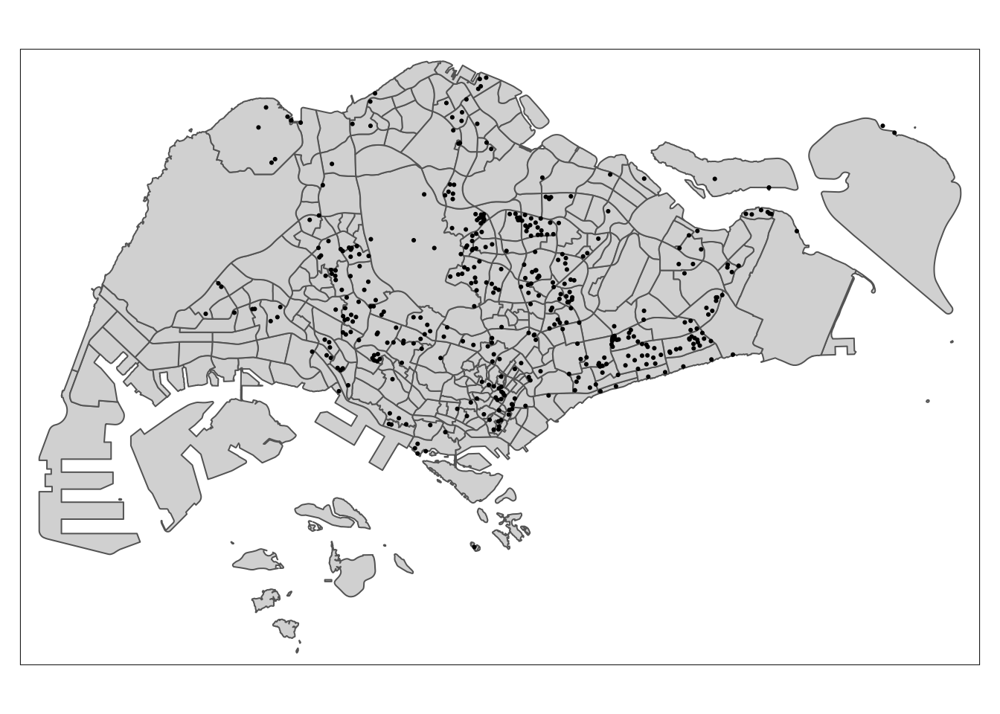
# Error
tmap_mode("plot")
tm_shape(mpsz) +
tm_polygons() +
tm_shape(MRT_Station) +
tm_dots()tmap_mode("plot")
tm_shape(mpsz) +
tm_polygons() +
tm_shape(Bus_stop) +
tm_dots(col = "red",
size = 0.0075)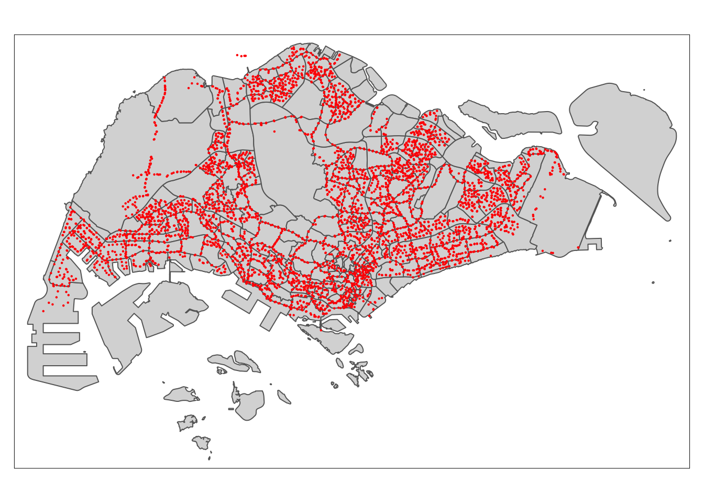
Note that the points outside of Singapore boundaries are related to bus stop at Johor Bahru and they are valid points to our analysis.
tm_shape(mpsz) +
tm_polygons() +
tm_shape(communityclubs) +
tm_dots()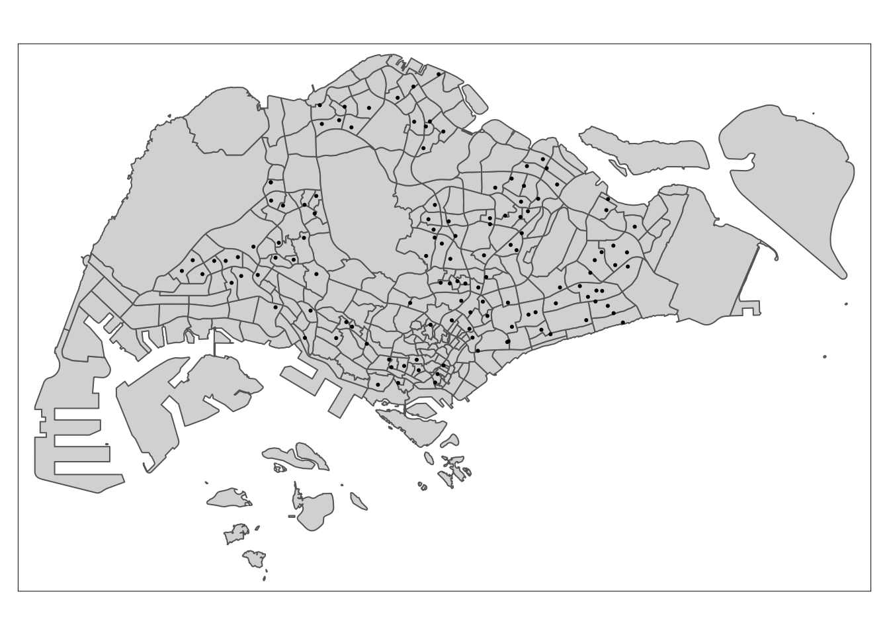
tm_shape(mpsz) +
tm_polygons() +
tm_shape(eldercare) +
tm_dots()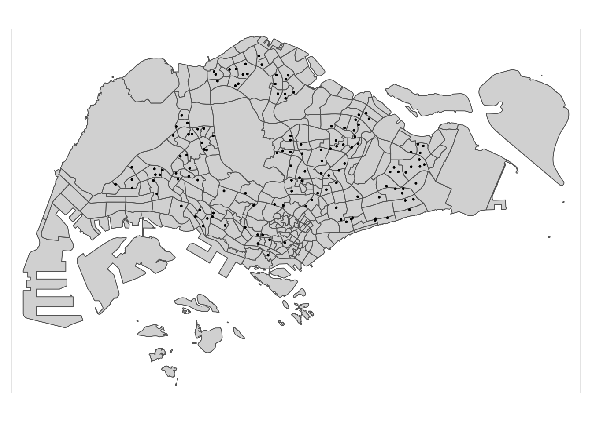
tm_shape(mpsz) +
tm_polygons() +
tm_shape(familyservices) +
tm_dots()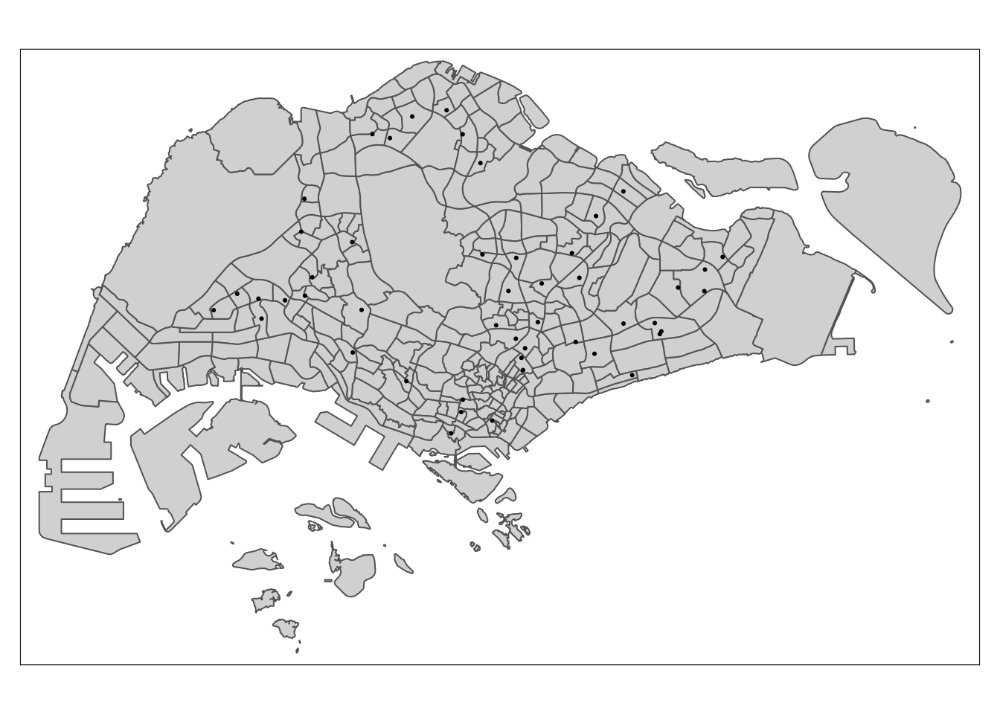
tm_shape(mpsz) +
tm_polygons() +
tm_shape(hawker) +
tm_dots()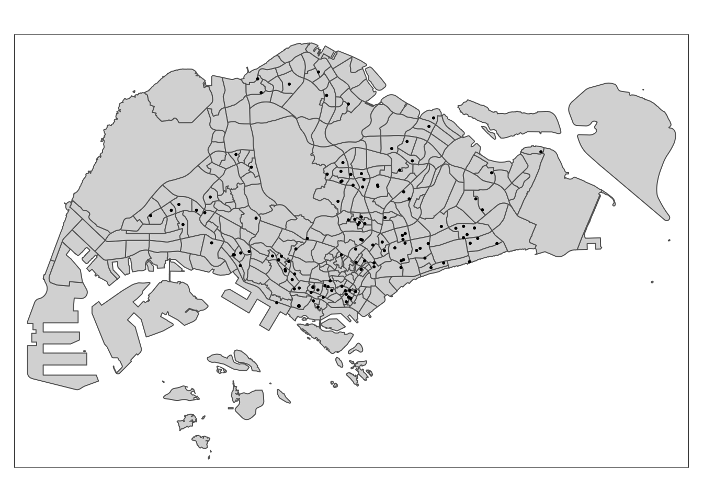
tm_shape(mpsz) +
tm_polygons() +
tm_shape(kindergartens) +
tm_dots()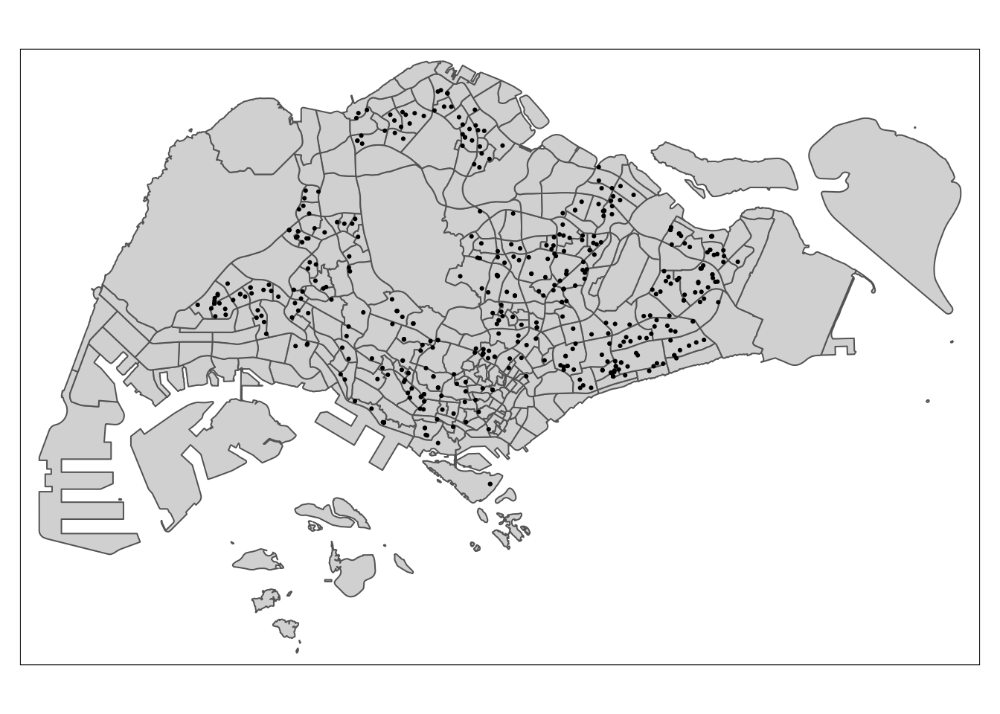
tm_shape(mpsz) +
tm_polygons() +
tm_shape(malls) +
tm_dots()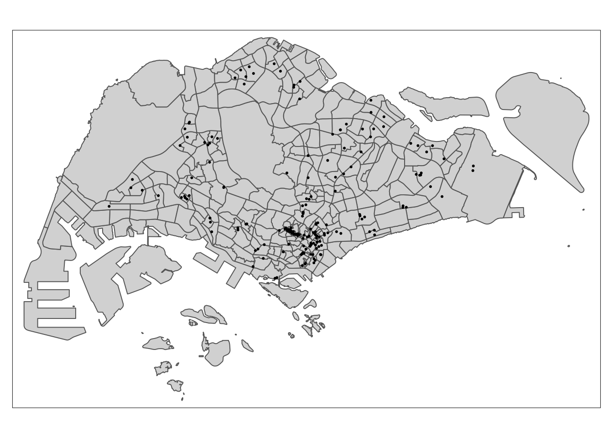
tm_shape(mpsz) +
tm_polygons() +
tm_shape(parks) +
tm_dots()tm_shape(mpsz) +
tm_polygons() +
tm_shape(pharmacy) +
tm_dots()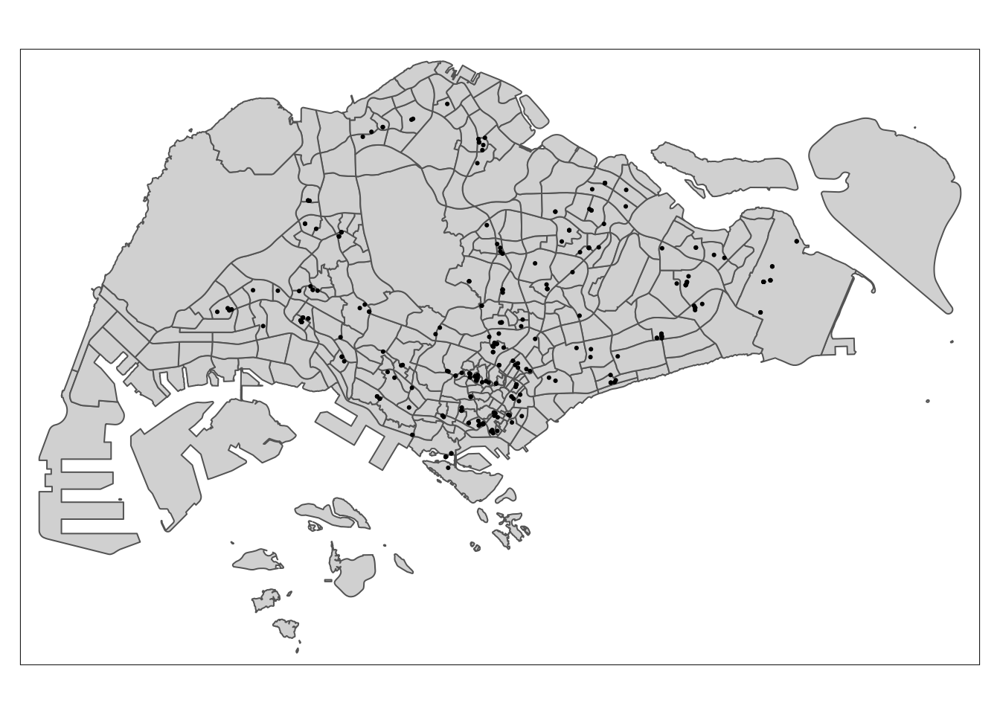
tm_shape(mpsz) +
tm_polygons() +
tm_shape(childcare) +
tm_dots()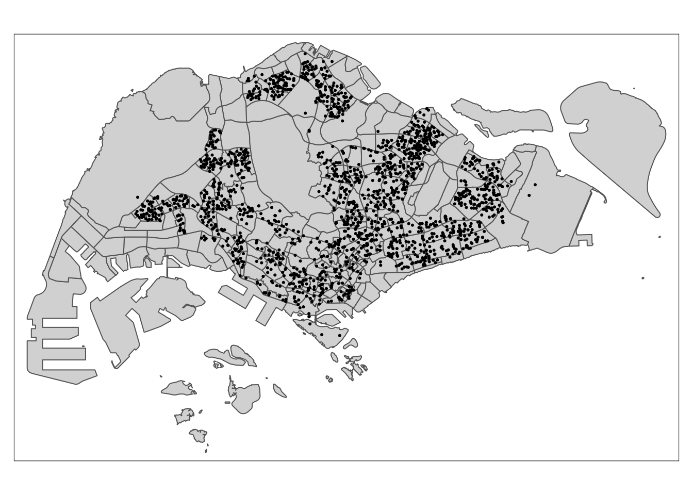
tm_shape(mpsz) +
tm_polygons() +
tm_shape(Primary_sf) +
tm_dots()tm_shape(mpsz) +
tm_polygons() +
tm_shape(Secondary_sf) +
tm_dots()5 Proximity distance calculator
library(units)
library(matrixStats)
proximity <- function(df1, df2, varname) {
dist_matrix <- st_distance(df1, df2) %>%
drop_units()
df1[,varname] <- rowMins(dist_matrix)
return(df1) }training_resale <-
# the columns will be truncated later on when viewing
# so we're limiting ourselves to two-character columns for ease of viewing between
proximity(Resale_training_sf, cbd_sf, "PROX_CBD") %>%
proximity(.,Bus_stop, "PROX_BUS") %>%
proximity(., communityclubs, "PROX_CLUBS") %>%
proximity(., eldercare, "PROX_ELDERCARE") %>%
proximity(., familyservices, "PROX_FAM") %>%
proximity(., MRT_Station, "PROX_MRT") %>%
proximity(., hawker, "PROX_HAWKER") %>%
proximity(., kindergartens, "PROX_KINDERGARTENS") %>%
proximity(., pharmacy, "PROX_PHARMACY") %>%
proximity(., parks, "PROX_PARK") %>%
proximity(., malls, "PROX_MALL") %>%
proximity(., supermarkets, "PROX_SPRMKT") %>%
proximity(., childcare, "PROX_CHILDCARE") %>%
proximity(., Primary_sf, "PROX_PRISCH") %>%
proximity(., Good_Prisch, "PROX_GOODP") %>%
proximity(., Secondary_sf, "PROX_SECSCH") training_resale <- training_resale %>%
mutate() %>%
rename("AREA_SQM" = "flr_r_s",
"PRICE" = "rsl_prc",
"REMAINING_LEASE" = "rmnng_l") %>%
relocate(`PRICE`)test_resale <-
# the columns will be truncated later on when viewing
# so we're limiting ourselves to two-character columns for ease of viewing between
proximity(Resale_test_sf, cbd_sf, "PROX_CBD") %>%
proximity(.,Bus_stop, "PROX_BUS") %>%
proximity(., communityclubs, "PROX_CLUBS") %>%
proximity(., eldercare, "PROX_ELDERCARE") %>%
proximity(., familyservices, "PROX_FAM") %>%
proximity(., MRT_Station, "PROX_MRT") %>%
proximity(., hawker, "PROX_HAWKER") %>%
proximity(., kindergartens, "PROX_KINDERGARTENS") %>%
proximity(., pharmacy, "PROX_PHARMACY") %>%
proximity(., parks, "PROX_PARK") %>%
proximity(., malls, "PROX_MALL") %>%
proximity(., supermarkets, "PROX_SPRMKT") %>%
proximity(., childcare, "PROX_CHILDCARE") %>%
proximity(., Primary_sf, "PROX_PRISCH") %>%
proximity(., Good_Prisch, "PROX_GOODP") %>%
proximity(., Secondary_sf, "PROX_SECSCH") test_resale <- test_resale %>%
mutate() %>%
rename("AREA_SQM" = "flr_r_s",
"PRICE" = "rsl_prc",
"REMAINING_LEASE" = "rmnng_l") %>%
relocate(`PRICE`)5.1 Facility Count within Radius Calculation
Here, we want to find the number of facilities within a particular radius. Like above, we’ll use st_distance() to compute the distance between the flats and the desired facilities, and then sum up the observations with rowSums(). The values will be appended to the data frame as a new column.
num_radius <- function(df1, df2, varname, radius) {
dist_matrix <- st_distance(df1, df2) %>%
drop_units() %>%
as.data.frame()
df1[,varname] <- rowSums(dist_matrix <= radius)
return(df1)
}training_resale <-
num_radius(training_resale, kindergartens, "NUM_KNDRGTN", 350) %>%
num_radius(., childcare, "NUM_CHILDCARE", 350) %>%
num_radius(., Bus_stop, "NUM_BUS_STOP", 350) %>%
num_radius(., Primary_sf, "NUM_PRISCH", 1000) %>%
num_radius(., Secondary_sf, "NUM_SECSCH", 1000)write_rds(training_resale, "data/aspatial/training_resale.rds")test_resale <-
num_radius(test_resale, kindergartens, "NUM_KNDRGTN", 350) %>%
num_radius(., childcare, "NUM_CHILDCARE", 350) %>%
num_radius(., Bus_stop, "NUM_BUS_STOP", 350) %>%
num_radius(., Primary_sf, "NUM_PRISCH", 1000) %>%
num_radius(., Secondary_sf, "NUM_SECSCH", 1000)write_rds(test_resale, "data/aspatial/test_resale.rds")6 Read Data in
training_data <- read_rds("data/aspatial/training_resale.rds")
test_data <- read_rds("data/aspatial/test_resale.rds")glimpse(training_data)Rows: 14,508
Columns: 50
$ PRICE <dbl> 483000, 590000, 629000, 670000, 680000, 760000, 768…
$ month <date> 2021-01-01, 2021-01-01, 2021-01-01, 2021-01-01, 20…
$ block <chr> "551", "305", "520", "253", "423", "617", "315A", "…
$ strt_nm <chr> "ANG MO KIO AVE 10", "ANG MO KIO AVE 1", "ANG MO KI…
$ AREA_SQM <dbl> 118, 123, 118, 128, 133, 133, 110, 110, 110, 112, 1…
$ REMAINING_LEASE <dbl> 59.08, 55.58, 58.67, 74.25, 71.25, 74.50, 84.33, 80…
$ Stry_Or <dbl> 1, 5, 6, 3, 1, 5, 8, 5, 6, 6, 5, 5, 8, 1, 2, 3, 3, …
$ Improvd <dbl> 1, 0, 1, 1, 1, 0, 1, 1, 1, 0, 0, 0, 0, 0, 1, 1, 1, …
$ NwGnrtn <dbl> 0, 0, 0, 0, 0, 0, 0, 0, 0, 0, 0, 0, 0, 0, 0, 0, 0, …
$ DBSS <dbl> 0, 0, 0, 0, 0, 0, 0, 0, 0, 1, 1, 1, 1, 0, 0, 0, 0, …
$ Standrd <dbl> 0, 1, 0, 0, 0, 0, 0, 0, 0, 0, 0, 0, 0, 1, 0, 0, 0, …
$ Aprtmnt <dbl> 0, 0, 0, 0, 0, 0, 0, 0, 0, 0, 0, 0, 0, 0, 0, 0, 0, …
$ Simplfd <dbl> 0, 0, 0, 0, 0, 0, 0, 0, 0, 0, 0, 0, 0, 0, 0, 0, 0, …
$ Model.A <dbl> 0, 0, 0, 0, 0, 1, 0, 0, 0, 0, 0, 0, 0, 0, 0, 0, 0, …
$ PrmmApr <dbl> 0, 0, 0, 0, 0, 0, 0, 0, 0, 0, 0, 0, 0, 0, 0, 0, 0, …
$ Adjndfl <dbl> 0, 0, 0, 0, 0, 0, 0, 0, 0, 0, 0, 0, 0, 0, 0, 0, 0, …
$ MdlA.Ms <dbl> 0, 0, 0, 0, 0, 0, 0, 0, 0, 0, 0, 0, 0, 0, 0, 0, 0, …
$ Maisntt <dbl> 0, 0, 0, 0, 0, 0, 0, 0, 0, 0, 0, 0, 0, 0, 0, 0, 0, …
$ Type.S1 <dbl> 0, 0, 0, 0, 0, 0, 0, 0, 0, 0, 0, 0, 0, 0, 0, 0, 0, …
$ Type.S2 <dbl> 0, 0, 0, 0, 0, 0, 0, 0, 0, 0, 0, 0, 0, 0, 0, 0, 0, …
$ ModelA2 <dbl> 0, 0, 0, 0, 0, 0, 0, 0, 0, 0, 0, 0, 0, 0, 0, 0, 0, …
$ Terrace <dbl> 0, 0, 0, 0, 0, 0, 0, 0, 0, 0, 0, 0, 0, 0, 0, 0, 0, …
$ Imprv.M <dbl> 0, 0, 0, 0, 0, 0, 0, 0, 0, 0, 0, 0, 0, 0, 0, 0, 0, …
$ PrmmMsn <dbl> 0, 0, 0, 0, 0, 0, 0, 0, 0, 0, 0, 0, 0, 0, 0, 0, 0, …
$ MltGnrt <dbl> 0, 0, 0, 0, 0, 0, 0, 0, 0, 0, 0, 0, 0, 0, 0, 0, 0, …
$ PrmmApL <dbl> 0, 0, 0, 0, 0, 0, 0, 0, 0, 0, 0, 0, 0, 0, 0, 0, 0, …
$ X2.room <dbl> 0, 0, 0, 0, 0, 0, 0, 0, 0, 0, 0, 0, 0, 0, 0, 0, 0, …
$ X3Gen <dbl> 0, 0, 0, 0, 0, 0, 0, 0, 0, 0, 0, 0, 0, 0, 0, 0, 0, …
$ PROX_CBD <dbl> 9537.543, 8663.223, 9449.166, 9211.988, 8935.289, 1…
$ PROX_BUS <dbl> 189.45342, 199.24454, 80.68454, 160.52022, 91.01582…
$ PROX_CLUBS <dbl> 1039.74076, 600.65527, 250.17807, 511.71420, 414.13…
$ PROX_ELDERCARE <dbl> 1064.6617, 190.8834, 789.1907, 147.6040, 441.8627, …
$ PROX_FAM <dbl> 837.9872, 953.8865, 863.1507, 366.4593, 466.4299, 9…
$ PROX_MRT <dbl> 1080.8607, 524.3923, 415.9309, 1634.1785, 218.2533,…
$ PROX_HAWKER <dbl> 482.8156, 331.7637, 379.2242, 588.4497, 512.9672, 3…
$ PROX_KINDERGARTENS <dbl> 239.51930, 148.29403, 224.35730, 270.32452, 295.950…
$ PROX_PHARMACY <dbl> 1254.2522, 439.1980, 455.9529, 1331.3597, 379.1169,…
$ PROX_PARK <dbl> 735.9373, 580.8933, 308.7999, 283.8337, 257.6041, 3…
$ PROX_MALL <dbl> 1213.2871, 441.6229, 549.4572, 1536.9839, 371.1503,…
$ PROX_SPRMKT <dbl> 419.91387, 245.54343, 318.05791, 313.57577, 379.115…
$ PROX_CHILDCARE <dbl> 239.51930, 111.38938, 127.59057, 102.48186, 288.529…
$ PROX_PRISCH <dbl> 809.7020, 558.0558, 213.5757, 567.7924, 312.2025, 2…
$ PROX_GOODP <dbl> 5849.176, 5370.382, 6221.695, 5429.407, 5759.906, 6…
$ PROX_SECSCH <dbl> 792.7406, 451.2317, 113.4179, 152.8092, 317.5082, 4…
$ geometry <POINT [m]> POINT (30820.82 39547.58), POINT (29412.84 38…
$ NUM_KNDRGTN <dbl> 1, 1, 1, 1, 1, 1, 1, 0, 1, 1, 1, 1, 1, 0, 0, 1, 0, …
$ NUM_CHILDCARE <dbl> 3, 6, 4, 3, 3, 3, 5, 2, 6, 5, 6, 5, 5, 2, 4, 3, 2, …
$ NUM_BUS_STOP <dbl> 2, 8, 6, 11, 6, 8, 4, 9, 5, 9, 7, 9, 9, 7, 6, 5, 2,…
$ NUM_PRISCH <dbl> 1, 3, 2, 3, 3, 3, 4, 2, 2, 2, 2, 2, 2, 3, 2, 1, 3, …
$ NUM_SECSCH <dbl> 1, 2, 2, 3, 2, 2, 2, 2, 2, 2, 2, 2, 2, 4, 0, 1, 1, …We can see that we have forgotten to remove Block and street. We can also check and confirm that all variables are in the right format.
training_data <- training_data %>%
select(-block, -strt_nm)glimpse(test_data)Rows: 998
Columns: 50
$ PRICE <dbl> 682888.0, 695000.0, 658888.0, 748000.0, 790000.0, 7…
$ month <date> 2023-01-01, 2023-01-01, 2023-01-01, 2023-02-01, 20…
$ block <chr> "306", "306", "402", "431", "259", "259", "176", "6…
$ strt_nm <chr> "ANG MO KIO AVE 1", "ANG MO KIO AVE 1", "ANG MO KIO…
$ AREA_SQM <dbl> 123, 123, 119, 119, 135, 135, 119, 133, 135, 118, 1…
$ REMAINING_LEASE <dbl> 53.58, 53.58, 55.42, 54.92, 58.42, 58.17, 69.33, 72…
$ Stry_Or <dbl> 6, 2, 4, 8, 5, 1, 2, 5, 4, 7, 7, 4, 2, 3, 3, 1, 2, …
$ Improvd <dbl> 0, 0, 1, 1, 0, 0, 1, 0, 0, 1, 1, 1, 1, 0, 0, 1, 1, …
$ NwGnrtn <dbl> 0, 0, 0, 0, 0, 0, 0, 0, 0, 0, 0, 0, 0, 0, 0, 0, 0, …
$ DBSS <dbl> 0, 0, 0, 0, 0, 0, 0, 0, 0, 0, 0, 0, 0, 0, 0, 0, 0, …
$ Standrd <dbl> 1, 1, 0, 0, 0, 0, 0, 0, 0, 0, 0, 0, 0, 0, 0, 0, 0, …
$ Aprtmnt <dbl> 0, 0, 0, 0, 0, 0, 0, 0, 0, 0, 0, 0, 0, 0, 0, 0, 0, …
$ Simplfd <dbl> 0, 0, 0, 0, 0, 0, 0, 0, 0, 0, 0, 0, 0, 0, 0, 0, 0, …
$ Model.A <dbl> 0, 0, 0, 0, 1, 1, 0, 1, 1, 0, 0, 0, 0, 1, 1, 0, 0, …
$ PrmmApr <dbl> 0, 0, 0, 0, 0, 0, 0, 0, 0, 0, 0, 0, 0, 0, 0, 0, 0, …
$ Adjndfl <dbl> 0, 0, 0, 0, 0, 0, 0, 0, 0, 0, 0, 0, 0, 0, 0, 0, 0, …
$ MdlA.Ms <dbl> 0, 0, 0, 0, 0, 0, 0, 0, 0, 0, 0, 0, 0, 0, 0, 0, 0, …
$ Maisntt <dbl> 0, 0, 0, 0, 0, 0, 0, 0, 0, 0, 0, 0, 0, 0, 0, 0, 0, …
$ Type.S1 <dbl> 0, 0, 0, 0, 0, 0, 0, 0, 0, 0, 0, 0, 0, 0, 0, 0, 0, …
$ Type.S2 <dbl> 0, 0, 0, 0, 0, 0, 0, 0, 0, 0, 0, 0, 0, 0, 0, 0, 0, …
$ ModelA2 <dbl> 0, 0, 0, 0, 0, 0, 0, 0, 0, 0, 0, 0, 0, 0, 0, 0, 0, …
$ Terrace <dbl> 0, 0, 0, 0, 0, 0, 0, 0, 0, 0, 0, 0, 0, 0, 0, 0, 0, …
$ Imprv.M <dbl> 0, 0, 0, 0, 0, 0, 0, 0, 0, 0, 0, 0, 0, 0, 0, 0, 0, …
$ PrmmMsn <dbl> 0, 0, 0, 0, 0, 0, 0, 0, 0, 0, 0, 0, 0, 0, 0, 0, 0, …
$ MltGnrt <dbl> 0, 0, 0, 0, 0, 0, 0, 0, 0, 0, 0, 0, 0, 0, 0, 0, 0, …
$ PrmmApL <dbl> 0, 0, 0, 0, 0, 0, 0, 0, 0, 0, 0, 0, 0, 0, 0, 0, 0, …
$ X2.room <dbl> 0, 0, 0, 0, 0, 0, 0, 0, 0, 0, 0, 0, 0, 0, 0, 0, 0, …
$ X3Gen <dbl> 0, 0, 0, 0, 0, 0, 0, 0, 0, 0, 0, 0, 0, 0, 0, 0, 0, …
$ PROX_CBD <dbl> 8625.861, 8625.861, 8139.329, 8876.533, 9195.256, 9…
$ PROX_BUS <dbl> 178.81652, 178.81652, 118.76102, 197.29080, 84.2301…
$ PROX_CLUBS <dbl> 578.73029, 578.73029, 265.15993, 546.71811, 832.788…
$ PROX_ELDERCARE <dbl> 211.9637, 211.9637, 367.6850, 356.4709, 501.9017, 5…
$ PROX_FAM <dbl> 940.0572, 940.0572, 612.9699, 319.3456, 706.0581, 7…
$ PROX_MRT <dbl> 573.2417, 573.2417, 1065.8815, 365.2200, 1981.5890,…
$ PROX_HAWKER <dbl> 331.2628, 331.2628, 143.0536, 375.3304, 508.2023, 5…
$ PROX_KINDERGARTENS <dbl> 188.26098, 188.26098, 518.63595, 148.88003, 450.529…
$ PROX_PHARMACY <dbl> 488.5421, 488.5421, 1152.5507, 522.2008, 1540.0063,…
$ PROX_PARK <dbl> 554.3174, 554.3174, 537.1188, 390.1731, 294.0396, 2…
$ PROX_MALL <dbl> 490.9497, 490.9497, 1145.3444, 514.1228, 1582.3113,…
$ PROX_SPRMKT <dbl> 246.50070, 246.50070, 504.07157, 313.59260, 541.623…
$ PROX_CHILDCARE <dbl> 1.580294e+02, 1.580294e+02, 3.274622e+02, 1.488800e…
$ PROX_PRISCH <dbl> 585.34956, 585.34956, 240.18714, 358.85813, 899.237…
$ PROX_GOODP <dbl> 5325.218, 5325.218, 4880.120, 5632.979, 5155.426, 5…
$ PROX_SECSCH <dbl> 438.0324, 438.0324, 586.3205, 250.5094, 259.7381, 2…
$ geometry <POINT [m]> POINT (29383.53 38640.51), POINT (29383.53 38…
$ NUM_KNDRGTN <dbl> 1, 1, 0, 1, 0, 0, 1, 0, 0, 1, 2, 1, 1, 1, 1, 1, 1, …
$ NUM_CHILDCARE <dbl> 6, 6, 1, 4, 2, 2, 3, 5, 5, 4, 8, 4, 3, 3, 2, 6, 3, …
$ NUM_BUS_STOP <dbl> 6, 6, 7, 6, 6, 6, 6, 8, 10, 6, 8, 10, 11, 11, 10, 5…
$ NUM_PRISCH <dbl> 3, 3, 2, 3, 3, 3, 2, 2, 2, 2, 3, 3, 3, 3, 2, 2, 3, …
$ NUM_SECSCH <dbl> 2, 2, 1, 2, 2, 2, 3, 2, 2, 2, 3, 4, 3, 3, 3, 2, 1, …We can see that we have forgotten to remove Block and street. We can also check and confirm that all variables are in the right format.
test_data <- test_data %>%
select(-block, -strt_nm)7 Computing Correlation Matrix
training_data_nogeo <- training_data %>%
st_drop_geometry()We will first create the correlation matrix and check for any NA or infinite values.
cor_matrix <- cor(training_data_nogeo[,3:47])
any(is.na(cor_matrix)) # check for missing values[1] TRUEany(is.infinite(cor_matrix)) # check for infinite values[1] FALSESince there are missing values, we will fix this by assigning 0 to them
na_value <- is.na(cor_matrix)
cor_matrix[na_value] <- 0corrplot::corrplot(cor_matrix,
diag = FALSE,
order = "AOE",
tl.pos = "td",
tl.cex = 0.2,
method = "number",
type = "upper")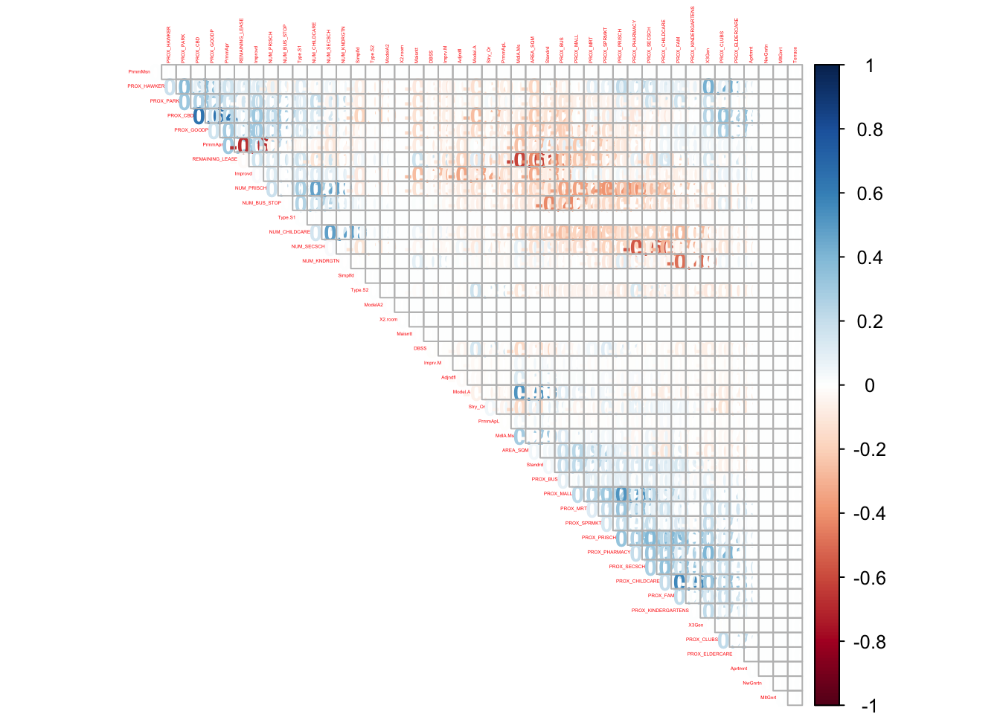
We can see several correlated variables above 0.5 but they are within acceptable range to be included in the regression.
8 Building a non-spatial multiple linear regression
price_mlr <- lm(PRICE ~ AREA_SQM + REMAINING_LEASE + Stry_Or + Improvd + NwGnrtn + DBSS + Standrd + Aprtmnt+ Simplfd + Model.A + PrmmApr + Adjndfl + MdlA.Ms + Maisntt + Type.S1 + Type.S2 + ModelA2 + Terrace + Imprv.M + PrmmMsn + MltGnrt + PrmmApL+ X2.room + X3Gen + PROX_CBD + PROX_BUS + PROX_CLUBS + PROX_ELDERCARE + PROX_FAM + PROX_MRT +PROX_HAWKER + PROX_KINDERGARTENS+ PROX_PHARMACY +PROX_PARK+PROX_MALL + PROX_SPRMKT + PROX_CHILDCARE + PROX_PRISCH + PROX_GOODP + PROX_SECSCH + NUM_KNDRGTN + NUM_CHILDCARE + NUM_BUS_STOP + NUM_PRISCH + NUM_SECSCH,
data = training_data)
summary(price_mlr)
Call:
lm(formula = PRICE ~ AREA_SQM + REMAINING_LEASE + Stry_Or + Improvd +
NwGnrtn + DBSS + Standrd + Aprtmnt + Simplfd + Model.A +
PrmmApr + Adjndfl + MdlA.Ms + Maisntt + Type.S1 + Type.S2 +
ModelA2 + Terrace + Imprv.M + PrmmMsn + MltGnrt + PrmmApL +
X2.room + X3Gen + PROX_CBD + PROX_BUS + PROX_CLUBS + PROX_ELDERCARE +
PROX_FAM + PROX_MRT + PROX_HAWKER + PROX_KINDERGARTENS +
PROX_PHARMACY + PROX_PARK + PROX_MALL + PROX_SPRMKT + PROX_CHILDCARE +
PROX_PRISCH + PROX_GOODP + PROX_SECSCH + NUM_KNDRGTN + NUM_CHILDCARE +
NUM_BUS_STOP + NUM_PRISCH + NUM_SECSCH, data = training_data)
Residuals:
Min 1Q Median 3Q Max
-258788 -48446 -2257 45091 361256
Coefficients: (11 not defined because of singularities)
Estimate Std. Error t value Pr(>|t|)
(Intercept) -3.227e+05 4.078e+04 -7.914 2.67e-15 ***
AREA_SQM 6.446e+03 1.516e+02 42.525 < 2e-16 ***
REMAINING_LEASE 5.999e+03 8.894e+01 67.453 < 2e-16 ***
Stry_Or 1.771e+04 3.176e+02 55.763 < 2e-16 ***
Improvd -4.281e+03 3.322e+04 -0.129 0.8975
NwGnrtn NA NA NA NA
DBSS 1.413e+05 3.343e+04 4.227 2.39e-05 ***
Standrd 4.273e+04 3.347e+04 1.277 0.2018
Aprtmnt NA NA NA NA
Simplfd NA NA NA NA
Model.A -3.342e+04 3.334e+04 -1.002 0.3162
PrmmApr 2.423e+02 3.325e+04 0.007 0.9942
Adjndfl -1.520e+04 3.512e+04 -0.433 0.6652
MdlA.Ms 2.243e+04 3.397e+04 0.660 0.5092
Maisntt NA NA NA NA
Type.S1 NA NA NA NA
Type.S2 1.615e+05 3.465e+04 4.661 3.17e-06 ***
ModelA2 NA NA NA NA
Terrace NA NA NA NA
Imprv.M 4.326e+03 4.698e+04 0.092 0.9266
PrmmMsn NA NA NA NA
MltGnrt NA NA NA NA
PrmmApL 2.143e+05 4.237e+04 5.058 4.29e-07 ***
X2.room NA NA NA NA
X3Gen NA NA NA NA
PROX_CBD -1.872e+01 2.528e-01 -74.067 < 2e-16 ***
PROX_BUS 1.920e+01 1.191e+01 1.612 0.1070
PROX_CLUBS 5.562e+00 2.792e+00 1.992 0.0463 *
PROX_ELDERCARE 6.710e-01 1.124e+00 0.597 0.5505
PROX_FAM -4.272e+01 1.403e+00 -30.440 < 2e-16 ***
PROX_MRT -4.724e+00 1.859e+00 -2.542 0.0110 *
PROX_HAWKER -3.306e+01 1.381e+00 -23.945 < 2e-16 ***
PROX_KINDERGARTENS -2.304e+00 4.704e+00 -0.490 0.6243
PROX_PHARMACY -1.595e+01 2.410e+00 -6.617 3.79e-11 ***
PROX_PARK 9.048e+00 1.657e+00 5.462 4.79e-08 ***
PROX_MALL -3.300e+01 2.188e+00 -15.082 < 2e-16 ***
PROX_SPRMKT -3.386e+01 4.257e+00 -7.952 1.96e-15 ***
PROX_CHILDCARE 7.968e+01 6.774e+00 11.763 < 2e-16 ***
PROX_PRISCH 5.192e+01 3.052e+00 17.013 < 2e-16 ***
PROX_GOODP -3.871e-01 2.824e-01 -1.371 0.1705
PROX_SECSCH 2.761e+01 2.547e+00 10.842 < 2e-16 ***
NUM_KNDRGTN 1.174e+04 8.023e+02 14.638 < 2e-16 ***
NUM_CHILDCARE -5.159e+03 3.403e+02 -15.159 < 2e-16 ***
NUM_BUS_STOP -3.499e+02 2.431e+02 -1.439 0.1501
NUM_PRISCH -9.092e+03 5.291e+02 -17.182 < 2e-16 ***
NUM_SECSCH 1.429e+03 7.118e+02 2.007 0.0447 *
---
Signif. codes: 0 '***' 0.001 '**' 0.01 '*' 0.05 '.' 0.1 ' ' 1
Residual standard error: 74070 on 14473 degrees of freedom
Multiple R-squared: 0.7436, Adjusted R-squared: 0.743
F-statistic: 1235 on 34 and 14473 DF, p-value: < 2.2e-16We can see that there are 11 singularities. This is because when we change from categorical to binary, we need to exclude them to ensure that there are no linear dependency. We will exclude NwGnrtn, Aprtmnt, Simplfd, Maisntt, Type.S1, ModelA2, Terrace, PrmmMsn, MltGnrt, X2.room, X3Gen
price_mlr1 <- lm(PRICE ~ AREA_SQM + REMAINING_LEASE + Stry_Or + Improvd + DBSS + Standrd + Model.A + PrmmApr + Adjndfl + MdlA.Ms + Type.S2 + Imprv.M + PrmmApL + PROX_CBD + PROX_CLUBS + PROX_ELDERCARE + PROX_FAM + PROX_MRT +PROX_HAWKER + PROX_PHARMACY +PROX_PARK+PROX_MALL + PROX_SPRMKT + PROX_GOODP + NUM_KNDRGTN + NUM_CHILDCARE + NUM_BUS_STOP + NUM_PRISCH + NUM_SECSCH,
data = training_data)
summary(price_mlr1)write_rds(price_mlr, "data/model/price_mlr.rds")write_rds(price_mlr1, "data/model/price_mlr1.rds")9 GWR Predictive Method
9.1 Converting sf dataframe to SpatialPointDataframe
train_data_sp <- as_Spatial(training_data)
train_data_spclass : SpatialPointsDataFrame
features : 14508
extent : 6958.193, 42645.18, 28157.26, 48741.06 (xmin, xmax, ymin, ymax)
crs : +proj=tmerc +lat_0=1.36666666666667 +lon_0=103.833333333333 +k=1 +x_0=28001.642 +y_0=38744.572 +ellps=WGS84 +towgs84=0,0,0,0,0,0,0 +units=m +no_defs
variables : 47
names : PRICE, month, AREA_SQM, REMAINING_LEASE, Stry_Or, Improvd, NwGnrtn, DBSS, Standrd, Aprtmnt, Simplfd, Model.A, PrmmApr, Adjndfl, MdlA.Ms, ...
min values : 350000, 18628, 99, 49.08, 1, 0, 0, 0, 0, 0, 0, 0, 0, 0, 0, ...
max values : 1418000, 19327, 167, 96.75, 17, 1, 0, 1, 1, 0, 0, 1, 1, 1, 1, ... bw_adaptive <- bw.gwr(PRICE ~ AREA_SQM + REMAINING_LEASE + Stry_Or + Improvd + DBSS + Standrd + Model.A + PrmmApr + Adjndfl + MdlA.Ms + Type.S2 + Imprv.M + PrmmApL + PROX_CBD + PROX_CLUBS + PROX_ELDERCARE + PROX_FAM + PROX_MRT +PROX_HAWKER + PROX_PHARMACY +PROX_PARK+PROX_MALL + PROX_SPRMKT + PROX_GOODP + NUM_KNDRGTN + NUM_CHILDCARE + NUM_BUS_STOP + NUM_PRISCH + NUM_SECSCH,
data = train_data_sp,
approach="CV",
kernel="gaussian",
adaptive=TRUE,
longlat=FALSE)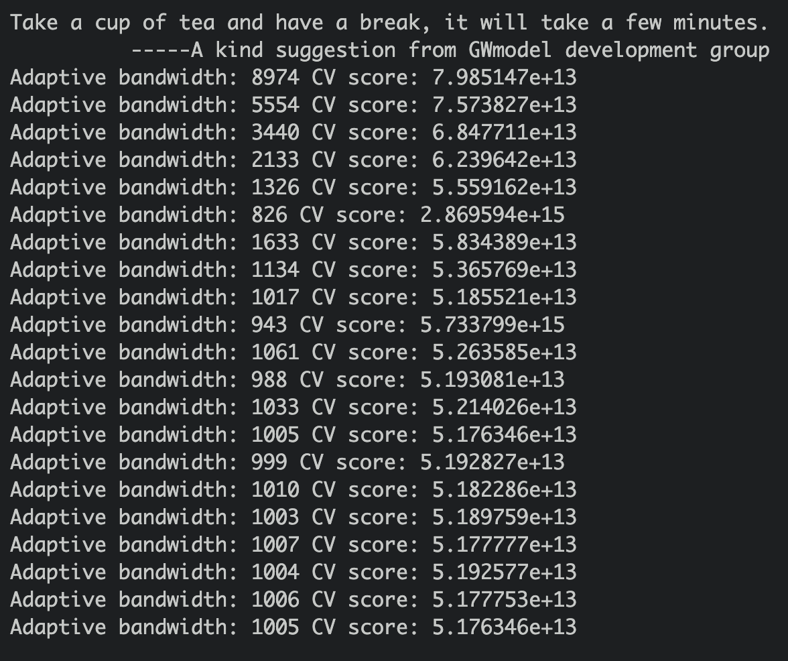
The smallest CV score is adaptive bandwidth: 1005.
write_rds(bw_adaptive, file = "data/model/bw_adaptive.rds")9.2 Construct the adaptive bandwidth gwr
bw_adaptive <- read_rds("data/model/bw_adaptive.rds")
bw_adaptive[1] 1005gwr_adaptive <- gwr.basic(formula = PRICE ~ AREA_SQM + REMAINING_LEASE + Stry_Or + Improvd + DBSS + Standrd + Model.A + PrmmApr + Adjndfl + MdlA.Ms + Type.S2 + Imprv.M + PrmmApL + PROX_CBD + PROX_CLUBS + PROX_ELDERCARE + PROX_FAM + PROX_MRT +PROX_HAWKER + PROX_PHARMACY +PROX_PARK+PROX_MALL + PROX_SPRMKT + PROX_GOODP + NUM_KNDRGTN + NUM_CHILDCARE + NUM_BUS_STOP + NUM_PRISCH + NUM_SECSCH,
data = train_data_sp,
bw=bw_adaptive,
kernel = 'gaussian',
adaptive=TRUE,
longlat = FALSE)write_rds(gwr_adaptive, "data/model/gwr_adaptive.rds")gwr_adaptive <- read_rds("data/model/gwr_adaptive.rds")
gwr_adaptive ***********************************************************************
* Package GWmodel *
***********************************************************************
Program starts at: 2023-03-17 12:49:34
Call:
gwr.basic(formula = PRICE ~ AREA_SQM + REMAINING_LEASE + Stry_Or +
Improvd + DBSS + Standrd + Model.A + PrmmApr + Adjndfl +
MdlA.Ms + Type.S2 + Imprv.M + PrmmApL + PROX_CBD + PROX_CLUBS +
PROX_ELDERCARE + PROX_FAM + PROX_MRT + PROX_HAWKER + PROX_PHARMACY +
PROX_PARK + PROX_MALL + PROX_SPRMKT + PROX_GOODP + NUM_KNDRGTN +
NUM_CHILDCARE + NUM_BUS_STOP + NUM_PRISCH + NUM_SECSCH, data = train_data_sp,
bw = bw_adaptive, kernel = "gaussian", adaptive = TRUE, longlat = FALSE)
Dependent (y) variable: PRICE
Independent variables: AREA_SQM REMAINING_LEASE Stry_Or Improvd DBSS Standrd Model.A PrmmApr Adjndfl MdlA.Ms Type.S2 Imprv.M PrmmApL PROX_CBD PROX_CLUBS PROX_ELDERCARE PROX_FAM PROX_MRT PROX_HAWKER PROX_PHARMACY PROX_PARK PROX_MALL PROX_SPRMKT PROX_GOODP NUM_KNDRGTN NUM_CHILDCARE NUM_BUS_STOP NUM_PRISCH NUM_SECSCH
Number of data points: 14508
***********************************************************************
* Results of Global Regression *
***********************************************************************
Call:
lm(formula = formula, data = data)
Residuals:
Min 1Q Median 3Q Max
-259902 -50073 -2595 45960 697099
Coefficients:
Estimate Std. Error t value Pr(>|t|)
(Intercept) -3.188e+05 4.201e+04 -7.589 3.41e-14 ***
AREA_SQM 6.767e+03 1.547e+02 43.734 < 2e-16 ***
REMAINING_LEASE 5.948e+03 9.011e+01 66.007 < 2e-16 ***
Stry_Or 1.818e+04 3.270e+02 55.610 < 2e-16 ***
Improvd -1.097e+04 3.426e+04 -0.320 0.748883
DBSS 1.460e+05 3.447e+04 4.236 2.29e-05 ***
Standrd 4.393e+04 3.451e+04 1.273 0.203118
Model.A -4.312e+04 3.438e+04 -1.254 0.209755
PrmmApr -5.752e+03 3.428e+04 -0.168 0.866730
Adjndfl -1.602e+04 3.622e+04 -0.442 0.658292
MdlA.Ms 1.366e+04 3.502e+04 0.390 0.696473
Type.S2 1.642e+05 3.571e+04 4.598 4.30e-06 ***
Imprv.M 9.382e+03 4.841e+04 0.194 0.846324
PrmmApL 1.838e+05 4.367e+04 4.208 2.59e-05 ***
PROX_CBD -1.948e+01 2.567e-01 -75.884 < 2e-16 ***
PROX_CLUBS 2.202e+01 2.801e+00 7.860 4.10e-15 ***
PROX_ELDERCARE 5.401e+00 1.143e+00 4.726 2.31e-06 ***
PROX_FAM -3.407e+01 1.396e+00 -24.397 < 2e-16 ***
PROX_MRT -9.855e+00 1.898e+00 -5.193 2.09e-07 ***
PROX_HAWKER -2.967e+01 1.417e+00 -20.946 < 2e-16 ***
PROX_PHARMACY -8.325e+00 2.463e+00 -3.380 0.000728 ***
PROX_PARK 1.550e+01 1.666e+00 9.301 < 2e-16 ***
PROX_MALL -2.494e+01 2.236e+00 -11.152 < 2e-16 ***
PROX_SPRMKT -2.795e+01 4.367e+00 -6.400 1.61e-10 ***
PROX_GOODP -4.158e-01 2.891e-01 -1.438 0.150363
NUM_KNDRGTN 1.060e+04 7.090e+02 14.949 < 2e-16 ***
NUM_CHILDCARE -5.565e+03 3.491e+02 -15.940 < 2e-16 ***
NUM_BUS_STOP -1.417e+02 2.304e+02 -0.615 0.538627
NUM_PRISCH -1.068e+04 5.255e+02 -20.319 < 2e-16 ***
NUM_SECSCH -2.021e+03 6.474e+02 -3.122 0.001798 **
---Significance stars
Signif. codes: 0 '***' 0.001 '**' 0.01 '*' 0.05 '.' 0.1 ' ' 1
Residual standard error: 76410 on 14478 degrees of freedom
Multiple R-squared: 0.7271
Adjusted R-squared: 0.7266
F-statistic: 1330 on 29 and 14478 DF, p-value: < 2.2e-16
***Extra Diagnostic information
Residual sum of squares: 8.452677e+13
Sigma(hat): 76334.93
AIC: 367455.5
AICc: 367455.6
BIC: 353479.6
***********************************************************************
* Results of Geographically Weighted Regression *
***********************************************************************
*********************Model calibration information*********************
Kernel function: gaussian
Adaptive bandwidth: 1005 (number of nearest neighbours)
Regression points: the same locations as observations are used.
Distance metric: Euclidean distance metric is used.
****************Summary of GWR coefficient estimates:******************
Min. 1st Qu. Median 3rd Qu. Max.
Intercept -1.4548e+06 -4.6710e+05 -2.0784e+05 2.4157e+05 1.2847e+06
AREA_SQM 1.6145e+03 3.2348e+03 4.3778e+03 6.6833e+03 8.6631e+03
REMAINING_LEASE 4.0905e+03 4.9922e+03 6.1387e+03 7.5314e+03 8.4507e+03
Stry_Or 1.1268e+04 1.2476e+04 1.4096e+04 1.6576e+04 2.0459e+04
Improvd -1.2065e+06 -8.8499e+04 -3.3776e+04 -1.2356e+04 1.5452e+06
DBSS -9.5731e+05 2.1606e+04 7.3551e+04 1.4708e+05 1.6717e+06
Standrd -1.1824e+06 -7.9719e+04 6.2211e+03 5.8653e+04 1.4791e+06
Model.A -1.2495e+06 -1.0097e+05 -5.6049e+04 3.3346e+03 1.4964e+06
PrmmApr -1.2176e+06 -9.7368e+04 -1.8598e+04 9.5304e+03 1.4993e+06
Adjndfl -1.2663e+06 -5.0473e+04 -1.7153e+04 8.0498e+04 1.5347e+06
MdlA.Ms -1.1110e+06 -2.5896e+04 2.7910e+04 9.8371e+04 1.5996e+06
Type.S2 -9.1354e+05 1.0022e+05 1.6488e+05 2.8107e+05 1.8472e+06
Imprv.M -1.0816e+06 -3.3876e+04 5.7395e+03 1.0804e+05 6.4574e+07
PrmmApL -7.8590e+05 1.5875e+05 1.7764e+05 2.1128e+05 1.8828e+06
PROX_CBD -3.9344e+01 -2.1491e+01 -1.8859e+01 -8.4149e+00 1.7230e+01
PROX_CLUBS -5.4932e+01 -2.1079e+01 -7.5242e+00 1.1215e+01 6.2743e+01
PROX_ELDERCARE -3.1435e+01 -1.2876e+01 -3.3125e+00 7.4618e+00 4.1139e+01
PROX_FAM -7.8119e+01 -3.7425e+01 -2.5234e+01 -3.3249e+00 3.1072e+01
PROX_MRT -1.3562e+02 -3.4614e+01 -1.8085e+01 -5.4282e-01 2.3095e+01
PROX_HAWKER -7.2563e+01 -2.2956e+01 -9.0648e+00 -6.3781e-01 3.8439e+01
PROX_PHARMACY -1.0591e+02 -3.2867e+01 -2.3136e+01 -1.3933e+00 1.0106e+02
PROX_PARK -4.3781e+01 -1.4518e+01 -6.3276e+00 6.3055e+00 3.9140e+01
PROX_MALL -7.8253e+01 -3.6393e+01 -6.5437e+00 1.2115e+01 4.6891e+01
PROX_SPRMKT -1.3570e+02 -5.9855e+01 -2.7766e+01 -8.0718e-02 4.6203e+01
PROX_GOODP -4.4953e+01 -1.2628e+01 8.2561e-01 9.0486e+00 3.4615e+01
NUM_KNDRGTN -1.4397e+04 -1.3103e+03 4.0995e+03 1.1081e+04 2.2052e+04
NUM_CHILDCARE -9.6929e+03 -4.5376e+03 -2.9498e+03 -1.5745e+03 1.8159e+03
NUM_BUS_STOP -2.8820e+03 -1.1841e+03 2.5732e+02 9.5197e+02 2.6178e+03
NUM_PRISCH -2.9142e+04 -6.9958e+03 -1.3525e+03 1.6400e+03 7.2517e+03
NUM_SECSCH -1.2541e+04 -2.0706e+03 2.6619e+02 3.1935e+03 2.6800e+04
************************Diagnostic information*************************
Number of data points: 14508
Effective number of parameters (2trace(S) - trace(S'S)): 232.3903
Effective degrees of freedom (n-2trace(S) + trace(S'S)): 14275.61
AICc (GWR book, Fotheringham, et al. 2002, p. 61, eq 2.33): 360210.2
AIC (GWR book, Fotheringham, et al. 2002,GWR p. 96, eq. 4.22): 360019.7
BIC (GWR book, Fotheringham, et al. 2002,GWR p. 61, eq. 2.34): 347088.5
Residual sum of squares: 5.020664e+13
R-square value: 0.8379075
Adjusted R-square value: 0.8352687
***********************************************************************
Program stops at: 2023-03-17 12:52:21 9.3 Preparing coordinates data
9.3.1 Extracting coordinates data
The code chunk below extract the x, y coordinates of the full, training and test data sets. This is as taught in in-class exercise 9.
coords_train <- st_coordinates(training_data)
coords_test <- st_coordinates(test_data)Before we proceed, we should save the output into rds for future uses
write_rds(coords_train, "data/model/coords_train.rds" )
write_rds(coords_test, "data/model/coords_test.rds" )coords_train <- read_rds("data/model/coords_train.rds")
coords_test <- read_rds("data/model/coords_test.rds")9.3.2 Dropping geometry field
We need to drop the geometry column of the sf data.frame by using st_drop_geometry() of the sf package. This is because, in the later parts, we cannot have the geometry columns in the data when running the random forest model.
train_data_nogeo <- training_data %>%
st_drop_geometry()write_rds(train_data_nogeo, "data/model/train_data_nogeo.rds")train_data_nogeo <- read_rds("data/model/train_data_nogeo.rds")9.4 Calibrating Random Forest Model
The code chunk below uses ranger() from the ranger package
This is done to calibrate the model, for predicting HDB resale prices.
set.seed(1234)
rf <- ranger(PRICE ~ AREA_SQM + REMAINING_LEASE + Stry_Or + Improvd + DBSS + Standrd + Model.A + PrmmApr + Adjndfl + MdlA.Ms + Type.S2 + Imprv.M + PrmmApL + PROX_CBD + PROX_CLUBS + PROX_ELDERCARE + PROX_FAM + PROX_MRT +PROX_HAWKER + PROX_PHARMACY +PROX_PARK+PROX_MALL + PROX_SPRMKT + PROX_GOODP + NUM_KNDRGTN + NUM_CHILDCARE + NUM_BUS_STOP + NUM_PRISCH + NUM_SECSCH,
data = train_data_nogeo)print(rf)Ranger result
Call:
ranger(PRICE ~ AREA_SQM + REMAINING_LEASE + Stry_Or + Improvd + DBSS + Standrd + Model.A + PrmmApr + Adjndfl + MdlA.Ms + Type.S2 + Imprv.M + PrmmApL + PROX_CBD + PROX_CLUBS + PROX_ELDERCARE + PROX_FAM + PROX_MRT + PROX_HAWKER + PROX_PHARMACY + PROX_PARK + PROX_MALL + PROX_SPRMKT + PROX_GOODP + NUM_KNDRGTN + NUM_CHILDCARE + NUM_BUS_STOP + NUM_PRISCH + NUM_SECSCH, data = train_data_nogeo)
Type: Regression
Number of trees: 500
Sample size: 14508
Number of independent variables: 29
Mtry: 5
Target node size: 5
Variable importance mode: none
Splitrule: variance
OOB prediction error (MSE): 1836142422
R squared (OOB): 0.9140025 gwRF_bw <- grf.bw(formula = PRICE ~ AREA_SQM + REMAINING_LEASE + Stry_Or + Improvd + DBSS + Standrd + Model.A + PrmmApr + Adjndfl + MdlA.Ms + Type.S2 + Imprv.M + PrmmApL + PROX_CBD + PROX_CLUBS + PROX_ELDERCARE + PROX_FAM + PROX_MRT +PROX_HAWKER + PROX_PHARMACY +PROX_PARK+PROX_MALL + PROX_SPRMKT + PROX_GOODP + NUM_KNDRGTN + NUM_CHILDCARE + NUM_BUS_STOP + NUM_PRISCH + NUM_SECSCH,
data = train_data_nogeo,
kernel = "adaptive",
coords = coords_train
)We will save the bandwidth output by using the code chunk below:
write_rds(gwRF_bw, "data/model/gwRF_bw.rds")9.5 Calibrating Geographical Random Forest Model
set.seed(1234)
gwRF_adaptive <- grf(PRICE ~ AREA_SQM + REMAINING_LEASE + Stry_Or + Improvd + DBSS + Standrd + Model.A + PrmmApr + Adjndfl + MdlA.Ms + Type.S2 + Imprv.M + PrmmApL + PROX_CBD + PROX_CLUBS + PROX_ELDERCARE + PROX_FAM + PROX_MRT +PROX_HAWKER + PROX_PHARMACY +PROX_PARK+PROX_MALL + PROX_SPRMKT + PROX_GOODP + NUM_KNDRGTN + NUM_CHILDCARE + NUM_BUS_STOP + NUM_PRISCH + NUM_SECSCH,
dframe=train_data_nogeo,
bw= bw_adaptive,
ntree = 30,
kernel="adaptive",
coords=coords_train)Let’s save the model output below:
write_rds(gwRF_adaptive, "data/model/gwRF_adaptive.rds")gwRF_adaptive <- read_rds("data/model/gwRF_adaptive.rds")9.6 Predicting by using test data
9.6.1 Preparing the test data
The code chunk below will be used to combine the test data with its corresponding coordinates data
test_data <- cbind(test_data, coords_test) %>%
st_drop_geometry()9.6.2 Predicting with test data
Next, predict.grf() of spatialML package will be used to predict the resale value by using the test data and gwRF_adaptive model calibrated earlier.
gwRF_pred <- gwRF_pred <- predict.grf(gwRF_adaptive,
test_data,
x.var.name="X",
y.var.name="Y",
local.w=1,
global.w=0)We should always save our output into rds since these computations take a really long time.
write_rds(gwRF_pred, "data/model/GRF_pred.rds")9.6.3 Converting predicted output into a data frame
GRF_pred_df <- as.data.frame(read_rds("data/model/GRF_pred.rds"))Then, we will use cbind() to append the predicted values onto the test data
test_data_p <- cbind(test_data, GRF_pred_df)write_rds(test_data_p, "data/model/test_data_p.rds")test_data_p <- read_rds("data/model/test_data_p.rds")9.6.4 Calculating Root Mean Square Error
The root mean square error (RMSE) allows us to measure how far predicted values are from observed values in a regression analysis. In the code chunk below, rmse() of Metrics package is used to compute the RMSE.
glimpse(test_data_p)Rows: 998
Columns: 50
$ PRICE <dbl> 682888.0, 695000.0, 658888.0, 74…
$ month <date> 2023-01-01, 2023-01-01, 2023-01…
$ AREA_SQM <dbl> 123, 123, 119, 119, 135, 135, 11…
$ REMAINING_LEASE <dbl> 53.58, 53.58, 55.42, 54.92, 58.4…
$ Stry_Or <dbl> 6, 2, 4, 8, 5, 1, 2, 5, 4, 7, 7,…
$ Improvd <dbl> 0, 0, 1, 1, 0, 0, 1, 0, 0, 1, 1,…
$ NwGnrtn <dbl> 0, 0, 0, 0, 0, 0, 0, 0, 0, 0, 0,…
$ DBSS <dbl> 0, 0, 0, 0, 0, 0, 0, 0, 0, 0, 0,…
$ Standrd <dbl> 1, 1, 0, 0, 0, 0, 0, 0, 0, 0, 0,…
$ Aprtmnt <dbl> 0, 0, 0, 0, 0, 0, 0, 0, 0, 0, 0,…
$ Simplfd <dbl> 0, 0, 0, 0, 0, 0, 0, 0, 0, 0, 0,…
$ Model.A <dbl> 0, 0, 0, 0, 1, 1, 0, 1, 1, 0, 0,…
$ PrmmApr <dbl> 0, 0, 0, 0, 0, 0, 0, 0, 0, 0, 0,…
$ Adjndfl <dbl> 0, 0, 0, 0, 0, 0, 0, 0, 0, 0, 0,…
$ MdlA.Ms <dbl> 0, 0, 0, 0, 0, 0, 0, 0, 0, 0, 0,…
$ Maisntt <dbl> 0, 0, 0, 0, 0, 0, 0, 0, 0, 0, 0,…
$ Type.S1 <dbl> 0, 0, 0, 0, 0, 0, 0, 0, 0, 0, 0,…
$ Type.S2 <dbl> 0, 0, 0, 0, 0, 0, 0, 0, 0, 0, 0,…
$ ModelA2 <dbl> 0, 0, 0, 0, 0, 0, 0, 0, 0, 0, 0,…
$ Terrace <dbl> 0, 0, 0, 0, 0, 0, 0, 0, 0, 0, 0,…
$ Imprv.M <dbl> 0, 0, 0, 0, 0, 0, 0, 0, 0, 0, 0,…
$ PrmmMsn <dbl> 0, 0, 0, 0, 0, 0, 0, 0, 0, 0, 0,…
$ MltGnrt <dbl> 0, 0, 0, 0, 0, 0, 0, 0, 0, 0, 0,…
$ PrmmApL <dbl> 0, 0, 0, 0, 0, 0, 0, 0, 0, 0, 0,…
$ X2.room <dbl> 0, 0, 0, 0, 0, 0, 0, 0, 0, 0, 0,…
$ X3Gen <dbl> 0, 0, 0, 0, 0, 0, 0, 0, 0, 0, 0,…
$ PROX_CBD <dbl> 8625.861, 8625.861, 8139.329, 88…
$ PROX_BUS <dbl> 178.81652, 178.81652, 118.76102,…
$ PROX_CLUBS <dbl> 578.73029, 578.73029, 265.15993,…
$ PROX_ELDERCARE <dbl> 211.9637, 211.9637, 367.6850, 35…
$ PROX_FAM <dbl> 940.0572, 940.0572, 612.9699, 31…
$ PROX_MRT <dbl> 573.2417, 573.2417, 1065.8815, 3…
$ PROX_HAWKER <dbl> 331.2628, 331.2628, 143.0536, 37…
$ PROX_KINDERGARTENS <dbl> 188.26098, 188.26098, 518.63595,…
$ PROX_PHARMACY <dbl> 488.5421, 488.5421, 1152.5507, 5…
$ PROX_PARK <dbl> 554.3174, 554.3174, 537.1188, 39…
$ PROX_MALL <dbl> 490.9497, 490.9497, 1145.3444, 5…
$ PROX_SPRMKT <dbl> 246.50070, 246.50070, 504.07157,…
$ PROX_CHILDCARE <dbl> 1.580294e+02, 1.580294e+02, 3.27…
$ PROX_PRISCH <dbl> 585.34956, 585.34956, 240.18714,…
$ PROX_GOODP <dbl> 5325.218, 5325.218, 4880.120, 56…
$ PROX_SECSCH <dbl> 438.0324, 438.0324, 586.3205, 25…
$ NUM_KNDRGTN <dbl> 1, 1, 0, 1, 0, 0, 1, 0, 0, 1, 2,…
$ NUM_CHILDCARE <dbl> 6, 6, 1, 4, 2, 2, 3, 5, 5, 4, 8,…
$ NUM_BUS_STOP <dbl> 6, 6, 7, 6, 6, 6, 6, 8, 10, 6, 8…
$ NUM_PRISCH <dbl> 3, 3, 2, 3, 3, 3, 2, 2, 2, 2, 3,…
$ NUM_SECSCH <dbl> 2, 2, 1, 2, 2, 2, 3, 2, 2, 2, 3,…
$ X <dbl> 29383.53, 29383.53, 30446.32, 30…
$ Y <dbl> 38640.51, 38640.51, 38170.74, 38…
$ `read_rds("data/model/GRF_pred.rds")` <dbl> 694987.6, 674191.5, 670978.4, 72…We notice that the column name is stated read_rds("data/model/GRF_pred.rds"), we will change the name accordingly.
test_data_p <- test_data_p %>%
rename(GRF_pred = `read_rds("data/model/GRF_pred.rds")`)rmse(test_data_p$PRICE,
test_data_p$GRF_pred)[1] 56235.789.6.5 Visualisaing the predicted values
ggplot(data = test_data_p,
aes(x = GRF_pred,
y = PRICE)) +
geom_point()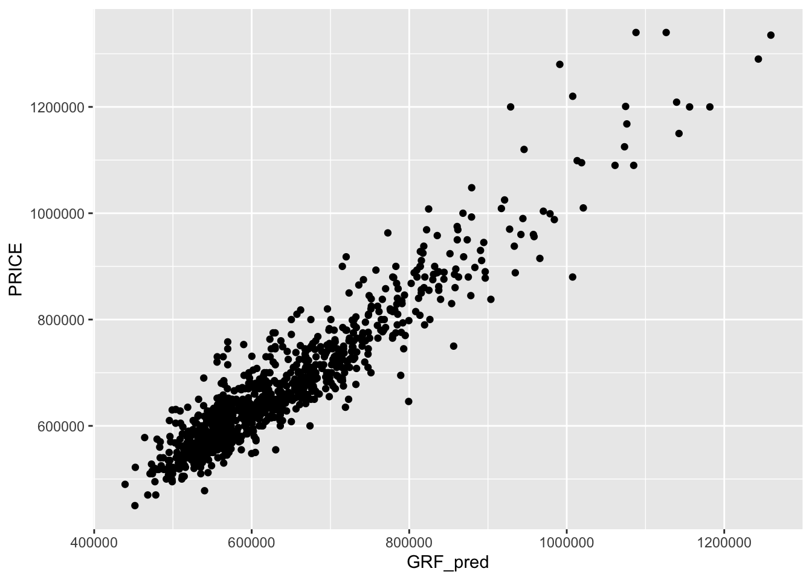